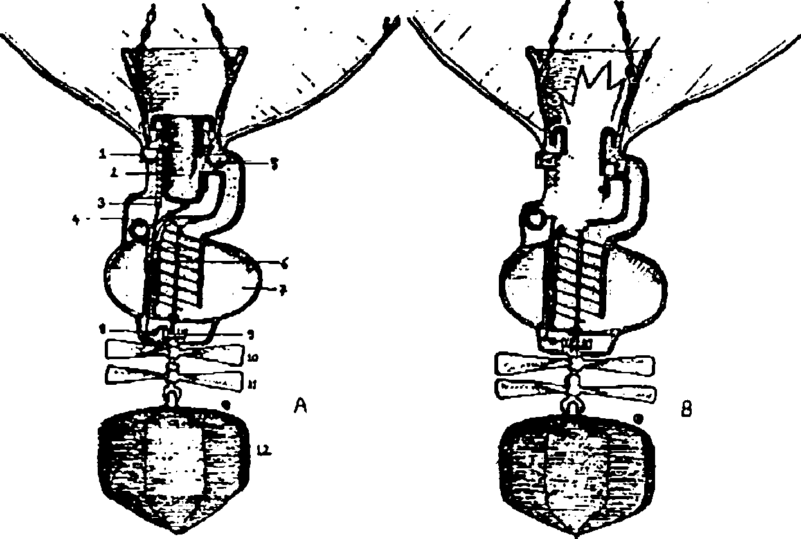
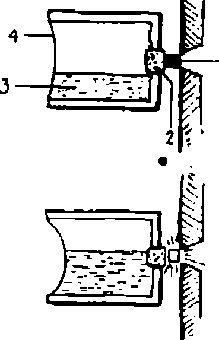
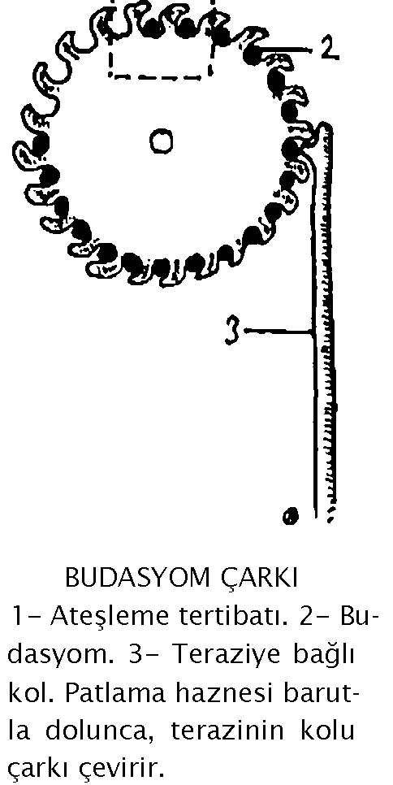
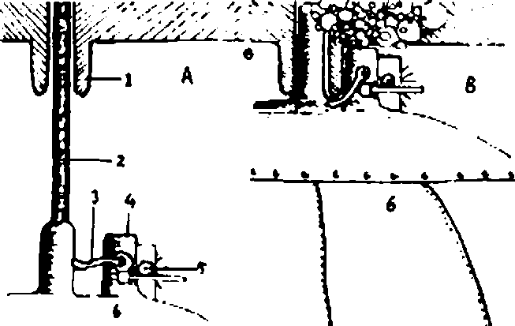
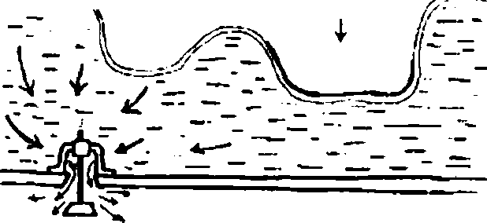
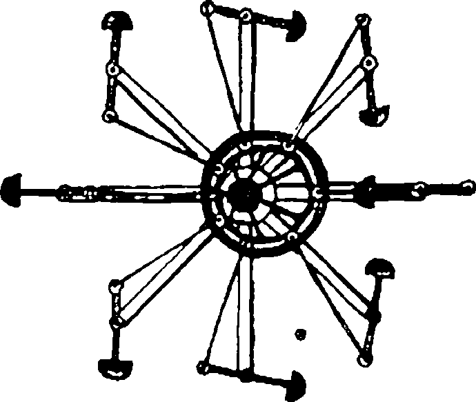
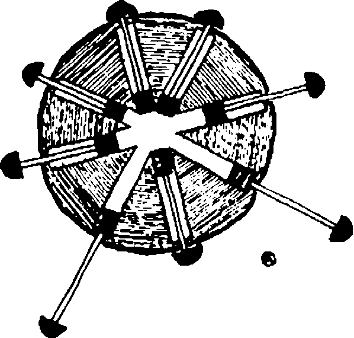

TAHTELBAHİRİN BALON ŞİŞİRME AYGITI
1- Ateşleme düzeneği. 2- Patlama haznesi. 3- Budasyom çarkı. 4- Barutu tartan terazinin topuzu. 5- Hazne ağırlaşınca kapanan musluk (patlama anında kıvılcımların borudaki baruta erişmesini önler). 6- Barutu boruya sevkeden Arşimet burgusu. 7- Barut deposu. 8- Hazne ağırlaşınca burgunun dönmesini durduran kilit sistemi. 9- Kilidin gireceği dişli. 10- Burguyu döndüren pervane. 11- İlk pervanenin aksı yönünde dönen pervane (böylece balonun ve ağırlığın kendi etrafında salınmasını önler). 12- Kurşun ağırlık. 13- Balon.
Calûd, artık Yâfes Çelebi'nin gövdesinin bir parçasıydı. Onun iri pazuları, kalın bilekleri, geniş omuzları ve koskoca elleri aslında sahibine aitti. Gerçekten de, vereceği bir emirle kölesi, istediği herhangi birisinin kafasını derhal kırıverebilir, ya da kendisini sırtına alıp üç fersah koşabilirdi. Kısacası Calûd'un gücü artık onun gücüydü. Fakat sahip olduğu bu iktidar Yâfes Çelebi'nin düşgücünü elbette azdıracak, onu artık adamakıllı yoldan çıkaracaktı. Böylece, Büyük İskender'in iktidar taşını ele geçirip kaybettiği o malum yerdeki evine kapanıp "deniz canavarını" tasarlamaya başladı. Hemen hemen herkeste olduğu gibi, sahip olduğu güç, isteklerini kamçılamış, iktidar tutkusu bütün zihnini kaplamıştı. Nasıl ki Calûd 0nun bir parçasıysa, deniz canavarı da onun gövdesinin bir uzantısı olacaktı. Büyük İskender'in neredeyse ele geçirir geçirmez kaybettiği iktidar taşının geleceğinden habersiz olarak, zihnini canavar üzerinde topladı. Bu, denizin altında gidebilecek olan bir gemi, tabiri caizse bir tahtelbahirdi.
Kadıkaryeli Rıza Paşa'nın afyoncubaşısı Duhan! İmdat Efendi'nin naklettiğine göre, Yâfes Çelebi'nin tasarlamaya başladığı bu gemi denizin altında, tıpkı kallabda olduğu gibi bir makara ve ağırlık sistemiyle hareket edecekti. Ancak kallabda makaraları döndüren ağırlıklar, bağlı oldukları ipin elverdiğince düştükten sonra araç duruyordu. Oysa denizaltı gemisinin hareketinin sürekli olması lazımdı. Bu konuda günlerce düşünen Yâfes Çelebi sonunda bir çözüm buldu: Meşinden yapılan birer balon, ağırlıkları kolayca su yüzeyine çıkarabilirdi. Fakat suyun derinliklerinde bu balonlar nasıl şişirilecekti? Öyleyse ağırlıklar düşerken katı halde olan ve yeterince derinlikte birdenbire gaz haline geçip balonları şişiren bir maddeye ihtiyaç vardı.

ŞİŞİRME AYGITINDAKİ ATEŞLEME TERTİBATI
1- Ateşleme parçası. 2- Ponzataşı. 3- Su. 4- Zar. Su basmayla zar kutudaki suyu ponza taşı hizasına yükseltir.


AĞIRLIK BALONUNDAN BARUT CAZININ BOŞALMASI
1- Tahtelbahirin alt kapağı. 2- Kasnağa giden halat. 3- Caz tahliye deliğini açan vana. 4- Caz tahliye deliği. 5- Deliği kapayan çarklı kilit. 6- Balon.
TAHTELBAHİRİN SUYA DALMA VE ÇIKMA SİSTEMİ
1- Su. 2- Barut. 3- Tanktaki suyun topa hücum etmesini önleyen tapa. 4- Tank balonundaki gazı boşaltan ve böylece geminin suya dalmasını sağlayan vana. 5- Balon.
Katıyken birdenbire gaz oluverecek olan o madde ise, elbette ki barutun ta kendisiydi. Yâfes Çelebi bu ilhamla ağırlıklara birer balon ve balonlara da birer şişirme aygıtı ekledi. Ağırlıklar makaraları döndüre döndüre deniz dibine düşerlerken, bir ateşleme düzeneği şişirme aygıtındaki barutu ateşleyecek ve barut gazı böylece balonu şişirecekti. Ne var ki barutun ne önce ne sonra uygun derinlikte patlaması gerekiyordu.
Bunun için de, ateşleme düzeneğinin basınca güdümlü olması lazımdı. Elbette bunun da bir kolayı vardı: Ateşleme düzeneği pek basit olarak, yatay durumdaki bir bardak gibi olacaktı. Yarısına kadar suyla dolu olan bardağın ağzı bir zarla sıkı sıkıya kapatılacak, dibine de bir delik delinip buraya ponza taşı konacaktı. Şişirme aygıtına yatay durumda raptedilen bu ateşleme düzeneği, ağırlıkla birlikte denizin dibine düşerken, deniz suyuyla doğrudan temas eden zar, belli bir derinlikte basıncın etkisiyle bardağın içine doğru esneyecek ve içerdeki suyun ponza taşı hizasına kadar yükselmesini sağlayacaktı. Su, böylece bu yarı geçirgen taştan sızıp, ponza taşıyla barut arasındaki budasyoma temas ederek onu patlatacaktı. Barut bu şekilde yanınca, çıkan gaz, balonu şişirip ağırlığın su yüzüne doğru çıkmasını sağlayacaktı. Ancak ağırlıklar kallabda olduğu gibi ikisi birden değil, nöbetleşe, önce biri sonra öteki olmak üzere düşecek ve çıkacaklardı. Bu yolla denizaltı gemisinin makaraları kesintisiz olarak döneceklerdi. Gelgelelim, ağırlığı su yüzüne çıkaran balon orada gazını atıp tekrar dibe inmeye başladığında ve yine aynı derinliğe geldiğinde, orada barutun yine patlaması gerekiyordu. İşte şişirme aygıtı, ard arda patlamaları sağlayacak şekilde tasarlanmıştı. Buna göre, düşen ağırlığın sürüklediği şişirme aygıtının pervanesi, hareketin etkisiyle dönerken bir Arşimet burgusunu çalıştıracak ve bu burgu da depodaki barutu bir boruyla patlama haznesine nakledecekti. Bulunduğu yuvada aşağı ve yukarı doğru kolayca oynayabilen bu hazne bir kaldıraca bağlıydı. Kaldıracın öteki ucunda da demirden bir topuz bulunuyordu. Öyle ki, bu terazi sistemi hazne boş iken onu yukarıda tutuyor ve hazne arzu edilen miktarda barutla dolunca topuz yukarı kalkarak iki işi birden yapıyordu: İlk olarak borudan barut nakleden burguyu durduruyor ve barut akışını kesiyor; ikinci olarak da budas- yom çarkını döndürüp, patlama haznesiyle ateşleme düzeneği arasına yeni bir budasyom parçası sürüyordu. Ağırlık uygun bir derinliğe, dolayısıyla belli bir basınca erişince budasyom patlayıp barutu ateşliyor, nihayet balon gazla dolup ağırlığı yukarıya doğru sürüklüyordu. Kısaca, ağırlıklar, şişirme sistemindeki barut bitene kadar sürekli kâh düşüp kâh yükseliyor, bu sırada da denizaltı gemisinin makaraları kesintisiz olarak dönüyordu. Ancak makaralar uskura doğrudan doğruya değil, bir dişli kutusu aracılığıyla bağlanmıştı. Bu sayede tam ve yarım hızla ilerlemek, hatta tornistan etmek bile mümkündü. Gemiyi kullanan kişi ona basil bir dümenle yön veriyor, ama gözünü seyir penceresinden ayırmıyordu. Çünkü bu pencere, onun yönünü kestirebileceği yegâne imkândı. Yâfes Çelebi'nin canavar şeklinde tasarlayıp tahtelbahir adını verdiği geminin uzun bir boynu ve boynundaki dört ejder kafası da boşuna yapılmamıştı. Seyir esnasında bu kafalar, arzu edilirse su yüzünde kalıp hem dehşet saçıyor, hem de dört bir yönün görülmesini sağlıyorlardı. Çünkü onların tam ortasında, ekseni etrafında dönebilen bir ayna vardı. Bir makara sistemiyle döndürülebilen bu ayna, sağa, sola, öne ve arkaya akan ejder kafalarından birinin hizasına getirilip, manzaranın aşağıya, yani seyir penceresine yansıtılmasına yarıyordu. Su yüzündeki hedefleri bu sayede görebilen tahtelbahirin ayrıca iki silahı da vardı: Kallab ve münfelik. Kallab, canavarın sağına ve soluna raptediliyordu. İpi çözülüp hedefe koyverilince ağırlıkları da derhal düşmeye başlıyor, ve araç tahtelbahirden derhal ayrılıyordu. Münfelik ise canavarın sırtına bağlıydı. Tahtelbahir hedef geminin altına geldikten sonra münfeli- ğin ipi çözülüyor ve sudan hafif olduğu için yüzeye doğru yükselen bu silah geminin altına çarpınca cam boruları kırılıyordu. Borulardan içeriye hücum eden su, Yâfes Çelebi'nin çok işine yarayan o maddeyi, budasyomu patlatıp haznedeki barutu ateşliyor, gemi de böylece havaya uçuyordu. Bütün her şeyi tasarladıktan sonra, tahtelbahirin suya dalmasını ve çıkmasını sağlamak, Yâfes Çelebi'ye çocuk oyuncağı gibi göründü. Tahtelbahirin deniz dibine dalması için musluğunu açıp tanklarını suyla doldurmak elbette ki yeterliydi. Fakat yüzeye çıkması için bu suyu tulumbalarla boşaltmak akıl kârı değildi. Fakat bunun da bir kolayı vardı. Su tankının içine yerleştirilen bir balon, şişirilince, suyu tankın deliğinden dışarıya, denize zahmetsizce basabilirdi. Bunun için Yâfes Çelebi, balonu yine barut gazıyla şişirmeyi düşündü. Bu kez hakiki, ama oldukça tuhaf bir top kullandı. Dikey duran bu topun namlusu U biçiminde kıvrıktı ve bu kıvrımdan sonra bir kazanla birleşiyordu. Eğer tabiri caizse namlu, kazanın tepesinden yine başlayıp bu kez aşağıya doğru kıvrılıyor ve tankın içindeki balonla birleşip nihayet buluyordu. Kazanın yarısı ve namlunun kıvrımı suyla doluydu. Top kuru sıkı ateşlenince barut gazı sudan geçip kıvılcımlardan arınarak balona doluyordu. Balon hızla şişerek, tanktaki suyu deliklerden dışarı tahliye ediyor ve tahtelbahir böylece su yüzüne zahmetsizce çıkıyordu. Bu deniz canavarını gerçi Yâfes Çelebi tasarlamıştı ama bunların hepsi elbette, onun iktidar taşını bulmasından çok önce olmuştu.
Karabaltacı Tayyar Paşa dünürü Altın Bey'den, mahdumu Kıl İzzet Efendi'nin naklettiğine göre, bu icadı sayesinde iyice galeyana gelen Yâfes Çelebi, ne yapıp edip Hiyel Kalemi reisi Uzun İhsan Efendi'yi altetmeyi ve gerekirse cebir kullanıp ihtira beratı almayı kafasına koymuştu. Tahtelbahirin planlarını temize çekip bütün hesaplarının sağlamalarını tamamladıktan sonra evinde, yani Büyük İskender'in iktidar taşını vaktiyle bulduğu ve kaybettiği yerde, günler ve geceler boyu düşündü, taşındı. Nihayet bir çözüm buldu: Uzun İhsan Efendi'nin çocuklarından birini kaçıracaktı.
Bu iş için, kölesi Calûd'u çarşıya bir çuval almaya yolladı. Calûd gelir gelmez derhal yola çıkıp peremeyle Haliç'i geçtiler ve Bayezid'e gelip Hiyel Kalemi'ne yakın bir kıraathanede güneşin batmasını beklediler. Akşam ezanlarının okunduğu ve dolayısıyla anaların bağıra çağıra çocuklarını sokaklardan toplamaya başladığı o eşref saatte kalkıp Uzun İhsan Efendi'nin evine yaklaştılar. Çocuklardan sessiz ve uslu birini gözlerine kestirip bir süre pusuda bekledikten sonra, efendisinin emrini işiten Calûd yerinden fırladı ve çuvalı çocuğun başından aşağıya geçiriverdi. Tabana kuvvet koşup Unkapanı'na indiler. Onlar bir peremeye atlar atlamaz çocuk ağlamaya başladı. Peremeci adamakıllı sarhoş olmasına rağmen durumdan kuşkulanır gibi oldu. Ama Calûd'un ne mal olduğu da tam bu sırada ortaya çıktı. Çocuğun bulunduğu çuvalı suya daldırdı ve tehlikeyi önledi. Suyun üzerinde hava kabarcıkları belirince peremecinin şüphesi artmış, içtiği şarabın etkisiyle kızaran gözlerini bu iki tuhaf kişiye adeta saplamıştı. Yâfes Çelebi ise heyecan ve korkudan kan ter içindeydi. Çocuk öldü diye ödü kopuyordu. Nihayet fazla dayanamayarak, her şeyi göze alıp, Calûd'a çuvalı sudan çıkarmasını emretti. Kıyıya vardıklarında tenha bir yerde çuvalı açtılar. Çocuk ölmemişti. Fakat baygındı. Onu ayaklarından tutup başaşağı çevirdiklerinde yuttuğu bütün suyu kustu ve kendine geldi. Evde ona bir yatak hazırlayıp yatırdılar. Eli ayağı titreyen Yâfes Çelebi, Calûd'a bakkala gidip şeker almasını emretti. Ne var ki köle, gittiği yerden bir türlü gelmek bilmiyordu ve çocuk da şe- kersizlikten ağlamaya başlamıştı. Calûd, sonunda kapıyı çaldı, ama şekerlerin yarısını yemişti. Getirdikleri ise çocuğa yetmeyince ağlama faslı yine başladı. En sonunda ona, koyun kellesi iriliğinde koskoca bir kandil şekeriyle bir çekiç verdiler. Çocuk şekeri çekiçle kıra kıra yemeye başladı. Bu arada, boynundaki gümüş kolyeden onun adının Davud olduğunu öğrendiler. Bir iş için çekiç lazım olduğunda Yâfes Çelebi çocuğun yanına gitti ve çekicin demir kısmının tıpkı hamur gibi eğri büğrü olduğunu gördü. Davud ve “elennâ lehülhadiyd” ayeti kerimesince madenleri bir hamur gibi eğip bükebiliyor, demir çubukları küçük parmaklarıyla oğuşturarak onlara kolayca kuş şekilleri verebiliyordu. O an Yâfes Çelebi'nin aklına, demirin ancak günahkârlara direndiğini, bu yüzden onu ateşin içinde günlerce dövmek gerektiğini söyleyen ustası geldi. Demek ki demirin günahkârlar için sert ve masumlar için yumuşak olduğu doğruydu. Bunları düşünür düşünmez şiddetli bir suçluluk hissetti. Vicdanıyla cebelleşerek o gece oturup, Uzun Ihan Efendi'ye bir mektup yazdı: Davud'un elinde olduğunu ve istediği ihtira beratları verilmez ya da durum subaşına bildirilirse bu zavallı masumun derhal öldürüleceğini anlattı. Sabah olur olmaz, Calûd'u çocuğun yanına bırakıp Unkapa- m'na gitti. Orada, arabalardan yollara dökülen buğdayları toplayıp satan sayısız başıboş çocuğa rastladı. Anası babası belli olmayan bu çocuklardan birinin kulağına asılıp, eğer dediğini yaparsa kendisine bir akçe vereceğini söyleyerek onu Bayezid'e kadar gelmeye razı etti. Hiyel Kalemi'ne yaklaştıklarında, hazırladığı mektubu çocuğa vererek bunu Uzun İhsan Efendi adındaki kişiye teslim etmesini sıkı sıkıya tenbihledi. Olacakları görmek için bir köşeye sinip bekledi ve çok geçmeden avlu kapısının açıldığım gördü. Kapıda, Uzun İhsan Efendi, sokak çocuğu ve bir yeniçeri belirmişti. Üstelik çocuk, tam da kendisinin sindiği yeri eliyle işaret ediyordu. Oracıkta yüreği ağzına gelen Yâfes Çelebi var gücüyle Unkapanı'na doğru koşmaya başladı. Eve geldiğinde nefes nefeseydi. Hele hele, tam gece yarısı kapısı yumruklanınca kalbi küt küt atmaya başladı. Kapıyı çalan, Hiyel Kalemi'nde gördüğü yeniçeriydi. Ama hiç de düşmanca bir tavrı yoktu. Yâfes Çelebi'ye mühürlü bir zarf verdikten sonra çekip gitti. Elleri titreye titreye zarfı açan Yâfes Çelebi, Uzun İhsan Efendi'nin yazdığı şu satırları okudu:
“Durumu subaşına haber vermiş değilim. Gördüğünüz yeniçeri benim ahbabımdtr ve hiçbir şeyden haberdar değildir. Fakat kaçırdığınız Davud'a karşılık ben de, sizin mektubunuzu getiren çocuğu alakoyuyorum Daha önce olduğu gibi şimdi de tam yirmibir çocuğum var ve benim için değişen hiçbir şey yok. Çocukları değiştirmek ya da değiştirmemek artık size kalmış. Benden istediğiniz şeye gelince: Brna böyle bir muameleyi reva gören adama bundan sonra ihtira beratı falan vermeyeceğimi takdir edersiniz.
Uzun Ihsan Efendi Hiyel Kalemi Reisi”
Tamburlu kıraathane ahalisi arasında sözüne inanılır bir zattan nakledildiğine göre Yâfes Çelebi, ne bahasına olursa olsun ihtira beratı almaya and içmişti. Bunu gerçekleştirmek için oynayacağı bir koz hâlâ mevcuttu: Hasköy'de bir atölye kiralayıp orada tahtelbahiri inşa edecek ve Haliç'e indirecekti. Bu canavar suyun altında sinsice ilerleyip boğaza çıkacak ve padişahın saltanat kayığının geçmesini sabırla bekleyecekti. Kayık görününce birdenbire su üstüne çıkacak ve varlığını padişaha göstermiş olacaktı. Padişah ise kaçınılmaz olarak önce korkacak, fakat denizaltı gemisinin kapağı açılarak içinden Yâfes Çelebi çıkıp da “Padişahım çok yaşa!” diye bağırınca, tebasından birinin korkunç bir silah icad ettiğini anlayıverecekti. Bütün bu hayaller iyiydi hoştu ama tahtelbahirin yapılması için tam ikibindokuz yüz kuruş gerekliydi. Yâfes Çelebi, Büyük İskender'in o iktidar taşını ele geçirip kaybettiği yerdeki kuyuya kancalı ipini sarkıtıp bakracı yukarı çektiğinde, içinde kala kala dörtyüzelli bir altın kaldığını gördü. Bir yerden para bulması gerekiyordu. Sonunda Galatalı tefecilerden Avram Efendinin evine gidip, nasıl olduysa yıllık yüzde onyedi faizle ikibindokuzyüz elli kuruş almayı başardı. İpotek olarak, iktidar taşının er ya da geç gelivereceği evini göstermişti. Has- köy'deki kayıkhanede bir tezgâh kiraladı ve etrafını tahta perdeyle çevirdi. Gövdenin inşaası için gerekli malzemeleri sağladıktan sonra bir de çatı uydurdu. Bu sayede kendisinin ne işler döndürdüğünü kimse bilmeyecekti. Kölesi Ca- lûd'un sayesinde omurganın yapımı on günde bitti. Aslında bir haftada da bitebilirdi ama, Uzun İhsan Efendinin oğlu Davud onlara ayakbağı oluyor, parmak kalınlığındaki çivileri, kol kalınlığındaki levyeleri eğip bükerek onların çabasını sekteye uğratıyordu. Günün birinde, tersane yakınlarındaki devasa balyemez topuna eliyle bastırıp avucunun izini çıkardı. Tunç zemin üzerindeki el izi, çok geçmeden kalyoncular tarafından keşfedildi. İçlerinde itikadı olan bazıları derhal bir falcı çağırdılar ve ondan bu el izini yorumlamasını istediler. Hayat ve kalp çizgilerine bakan falcı onlara, “Bu elin sahibi bir çocuk ve hep çocuk kalacak, asla büyümeyecek, çünkü o, her türlü güçten arınmış bir masum” demişti. Onun bu masumiyetini yüreğiyle hissettiğinden midir, Yâfes Çelebi Davud'u denizaltı canavarının yapımına karıştırmak istemiyordu. Hatta onun oynamış olduğu demir çivilerin üzerinde kalan parmak izlerini eğeyle güç bela törpüleyip temizliyor ve bir yandan da, ateşin üzerindeki kızgın demiri dövmeye çalışan Calûd'u düşünüyordu. Demir, gerçekten de bu kölenin adaleli kollarına direniyordu. Öyle ki, sonunda Calûd, çekici bırakıp altı okkalık bir balyoz kullanmaya başlamıştı. Çünkü demiri isyankâr bir köle gibi görüyor, körükle güçlendirdiği ateşin ortasına attığı bu köleyi adam etmek için ona var gücüyle vuruyor, adeta ondan nefret ediyordu. Yâfes Çelebinin gençlik tutkusu da işte ona tam bu sıralarda bulaştı. Ancak sözkonusu tutku, bu kez ilkiyle kıyaslanamayacak kadar şiddetliydi. Hele hele, sahibinin çizdiği planları görünce, yüreğindeki ateş iyice alevlendi. Sayıları öğrendiğinde ise artık planları kolayca anlayabilecek durumdaydı. Tahtelbahirin gövdesinin yarısı bittiğinde okumayı sökmüştü. Gövde tamamlanıp, dört ejder kafası taşıyan boyun raptedildiğinde hem yazabiliyor, hem de dört işlemi yapabiliyordu. Boş bir zamanında oturup tam binbeşyüzseksenbeşe kadar saydı. Çünkü bu sayı, o isyankâr kölenin, yani demirin eriyeceği noktayı simgeliyordu. Balon şişirme aygıtlarının dökümünden çok şey öğrendi. Parçaların birleştirilip aygıtın ortaya çıkması ise onu kendinden geçirdi. Tabaklanmış sığır derilerini dikip balonları hazırlarken artık tahtelbahirin nasıl işlediğine bütünüyle vakıftı. Denizaltı canavarı nihayet tamamlandı. Ama Calûd, yorgun argın eve geldiklerinde sahibinin kitaplarım ve notlarım okumayı sürdürüyordu. Yâfes Çelebi ise Calûd'un bu tutkusunu o sıralar sezebilecek durumda değildi. Kitaplarının karıştırıldığını farketmiş, ama bu konuda zihnini hiç yormamışlı. Çünkü kafası, üç gün sonra, yani cuma günü olacak olaylarla meşguldü. Cuma günü padişah efendimiz kayıklarıyla Beşiktaş'tan çıkacak ve Ayasofya'da öğle namazı kılacaklardı. Bu yüzden tahtelbahirin aynı gün, ortalık aydınlanmadan ve kimseler görmeksizin önce denize indirilmesi, bu iş kazasız belasız tamamlanınca da kayıkla uygun bir derinliğe çekilmesi gerekliydi. İki gün boyunca hesaplarım kontrol eden Yâfes Çelebi'nin heyecanı, son gece doruk noktaya ulaştı. Tahtelbahir, kendisi içinde olduğu halde batabilirdi. Bu yüzden, öldüğü takdirde evini kölesi Calûd'a bıraktığım bildiren bir kâğıt yazıp mührünü bastı ve bu vasiyetnameyi, okuma öğrendiğini bilmediği kölesine verdi. Eğer sağ dönerse, bu kâğıdı ondan geri alabileceğine inanıyordu. Günün aydınlanmasına az bir zaman kala, Davud'un uyuduğundan emin olduktan sonra kölesini alıp Hasköy'e doğru yürümeye başladı. Kayıkhaneye geldiklerinde kalbi duracak gibiydi. Son kontrollerini yaptıktan sonra tahtelbahirin halatını Calûd'un bineceği kayığa bağladı. Kölesi kayıkla biraz açıldıktan sonra da, denizaltı gemisinin bulunduğu kızağı iyice yağladı. Bir süre bekleyip dua etmek istedi ama yapamadı. Nihayet baltayı alıp gemiyi tutan halata indiriverdi. Tahtelbahir kızak üzerinde kayarak denize indi. Dengesi yerindeydi. Sevinçten uçacak hale gelen Yâfes Çelebi küpeşteye atlayıp kapağı açtı ve elinde fenerle basınç odasına girdi. İlkini sıkıca kapattıktan sonra ikinci kapağı açtı. Bunu yapmazsa, ağırlıkların ineceği alt kapaklardan içeriye su hücum ederdi. Denizaltının içine girdikten sonra ikinci kapağı da kapattı ve çekiçle duvara üç kez vurdu. Dışarıdan bu sesi işiten Calûd, güçlü kollarıyla küreklere asılarak tahtelbahiri Haliç'in ortasına doğru çekmeye başladı. Denizin en derin yerine gelince halatı çözdü ve sahibini kaderiyle başbaşa bıraktı. Artık hiyel üstadının yapacağı en ufak bir hata hayatına malolabilirdi. Dümeni kilitledikten sonra seyir penceresinden dışarı baktı. Ortalık aydınlanmaya başlamıştı. Vanaları biraz açarak tankları yarıya kadar suyla doldurdu. Böylece tahtelbahirin gövdesi suya gömülmüş ama kafası dışarıda kalmıştı. Uskuru döndüren makaraların bulunduğu bölmeye geçerek balonları kontrol etti ve alt kapakları açtı. Ters olarak suya daldırılan bardak örneğinde olduğu gibi, kapaklardan içeriye deniz suyu hücum etmiyordu. Birinci makaradaki ipi kapaktaki yuvadan geçirdikten sonra, balona ve şişirme aygıtına bağlı olan kurşun ağırlığı makarayla kaldırıp suya attı. Deniz dibine doğru hızla düşen ağırlık, makarayı fırıl fırıl döndürmeye başladı. Yâfes Çelebi aceleyle ikinci makaraya gidip diğer kurşun ağırlığı hazırladı. Kulağı deniz dibinden gelecek olan patlama sesindeydi. Vakit sanki hiç geçmeyecekmiş gibi geliyordu. Sonunda Haliç'in dibinde şiddetli bir patlama duyuldu ve Yâfes Çelebi sevinç içinde ikinci ağırlığı bıraktı. Bu sırada birinci makara geri sarılıyordu. Çok geçmeden birinci ağırlık yüzeye yaklaştı ve kapaktaki düzenekle temas eder etmez barut gazını boşaltıverip yine düşmeye başladı. Aynı anda dipten ikinci patlama duyuldu. Tahtelbahirin mucidi, ağırlıkların ritminin iyi ayarlandığından emin olduktan sonra dümenin başına geçti. O ana dek boşta dönen makaraların birleştiği dişli kutusunun kolunu çevirir çevirmez uskur dönmeye başladı ve denizaltı gemisi yarım hızla harekete geçti. Tahtelbahir belli bir hıza erişir erişmez, kolu yine çevirip icadına tam hız verdi. Keyfi iyice yerinde olarak, seyir penceresinden dört bir yana baktı. Dışarıda güneş doğmuştu. Yanında getirdiği şarap şişesinin tıpasını açıp bir yudum aldı. Zevkten adeta titriyordu. Kendisini hiç bu kadar güçlü hissetmemişti. İçinde bulunduğu canavar onun kölesi, gövdesinin bir uzantısı gibiydi. Gel gör ki güç onu yoldan çıkardı: Seyir penceresinden, denizin üzerinde seyreden bir peremeci gördü. Dümeni onun üzerine kırdı. Dört başlı bir deniz canavarının üstüne üstüne geldiğini görüp korkudan avaz avaz bağıran bu adam onu bir hayli güldürdü. Sonunda Bahçekapı açıklarına gelmiş, ama denizaltıyı hareket ettiren barut da tükenmişti. Padişahın kayığını burada bekleyecekti. Vanaları açıp tankları bütünüyle suyla doldurdu ve böylece canavarın kafası da suya battı. Artık denizin tam yedi kulaç dibindeydi. Öğle namazı ezani saatle 6.27'de, zevali saatle de 12.33'te kılınmaya başlanacağına göre, padişahın kayığının en geç 12.15'de gelmesi gerekiyordu. Bir şişe şarabı içip bitirdikten sonra saatine bakmayı akıl etti ve gözleri faltaşı gibi açıldı: Dün geceden kurmayı unuttuğu saati durmuştu. Artık denizin dibinde zamanı kestirmesine olanak yoktu. Öyle bir telaşa kapıl mıştı ki ne yapacağını bir türlü kestiremiyordu. Sonunda, güneş doğduğundan bu yana ne kadar zaman geçtiğini düşünüp vaktin 8.48 olduğunu tahmin ederek saatini yeniden ayarladı. Ancak bunun doğru olma ihtimali elbette ki çok fazla değildi. Saati 12.14 olunca vaktin geldiğine hükmedip yüzeye çıkmaya karar verdi. Tank balonlarına barut gazı dolduracak düzeneği ateşledi ve hızla su yüzüne doğru yükselmeye başladı. Gelgeldim büyük bir gürültü ve sarsıntıyla yere yuvarlandı. Çünkü tahtelbahir, tam üstündeki büyük bir kalyona çarpmıştı. Alabora olmak üzereydi ki, hemen o anda verdiği doğru bir kararla tank vanalarını tekrar açtı, bu yüzden denizaltı gemisinin altı ağırlaştığı için alabora olmaktan kurtulmuş, ama bu kez yine dibe inmeye başlamıştı. Denge sağlandıktan sonra seyir penceresinden deniz dibini uzun uzun seyretti. Eğer tepeye bakan beşinci bir ejder kafası olsaydı, hem kalyonu görebilir, hem de güneş ışığının açısını zor da olsa ölçerek zamanı üç aşağı beş yukarı tahmin edebilirdi. Nefes almakta zorluk çekmeye başladığında artık ne bahasına olursa olsun yukarı çıkmaya karar verdi. Su tahliye deliğine barutu koyup ateşledi. Fakat barutu fazla koymuş olmalıydı ki, balon şişer şişmez patladı. İşin kötüsü, tahtelbahire bir emniyet tulumbası koymayı da akıl edememişti. Artık yüzeye çıkmasının hiçbir yolu kalmamış gibiydi. İçerideki hava tükenmeye başladığında telaşı doruk noktaya varmıştı. Makaraların bulunduğu bölmeye geçip ağırlıkların iplerini keserek onları alt kapaklardan attı. Ama bu, tahtelbahiri sadece iki kulaç kal- dırabildi. Seyir penceresinden baktığında, akıntının etkisiyle sürüklendiğini anladı. Bir süre sonra pencereden hiçbir şey göremedi. Deniz dibi kapkaranlıktı. Çünkü gece olmuştu. Akıntı onu Sarayburnu'ndan Marmara'ya doğru sürüklüyor olmalıydı. Aklına, gemiyi hafifletmek için bütün ağırlıkları alt kapaklardan atmak geldi. Güçlükle soluyarak, makaraları çözüp, parçalayıp alt kapaklardan attı. Böylece dişli kutusu, uskur mili ve tank tahliye kazanı da denizin dibini boyladı. Bütün bunları başardıktan sonra kapakları sıkıca kapatıp, ağırlık halatlarının geçtiği delikleri birer kazıkla sıkıca tıkadı. Havasızlıktan gözleri kararıyor, başı dönüyordu. Tahtelbahirin hiç olmazsa başının su yüzüne çıkıp çıkmadığını anlamak için seyir penceresinden baktı. Ancak yine o zifiri karanlığı gördü. Bunun, yıldızsız gökyüzü mü yoksa deniz dibi mi olduğunu çıkarmasına imkân yoklu. Umutsuzca tavana vurdu. Duyduğu tok ses, deniz canavarının en azından sırtının su yüzünde olmadığını gösteriyordu. Havanın tükendiği bu ortamda taş çatlasa on dakika yaşayabileceğini hesapladığında kendisini Yunus Peygambere benzetti. İcad etliği canavarın onu yuttuğunu, bu ejderin içinde öleceğini düşündü. Oysa onun, kendi benliğinin bir parçası olduğuna inanmıştı. Diğer icadları gibi, benliğinin bir parçası olan bir başka eseri gözünün önüne geldi: Bu, vaktiyle padişaha uysal bir kul olarak takdim etmeyi düşündüğü demirden bir müzik kutusuydu. Kutu açıldığında içinden, demirden bir gül goncası fırlıyor ve demir çanların çaldığı nağme bitene kadar goncanın demir yaprakları tek lek açılıyordu. Demir yapraklarını ateş altında teker teker dövüp birbirine menteşelerle raptettiği bu madeni gülün açmasını sağlayan şeyin ne olduğunu düşündü. Bu şey, kuvvet ya da zor idi. Demir çanlar da o nağmeyi kuvvet ile zoraki çalıyorlardı. Daha doğrusu, tabiatın kuvvetleri bu müzik kutusunda esir edilmişti. Bu esir kuvvetler, aynı zamanda kendilerine sahip olan kişinin, yani Yâfes Çelebi'nin kudreti ve iktidarıydı. Böylece o, kendisini on yıllardır mutsuz eden şeyin, benliğine hükmeden bu iktidar tutkusu olduğunu anladı. O güne dek kendisi için her şey bir iktidar kaynağıydı: Ateş, buhar makinasını çalıştıran! su, bir çarkı döndüren! toprak ise demir, altın, gümüş ve el maşlarla dolu olan; rüzgâr da, değirmenleri döndüren bir kuvvetti. Kükürt, güherçile ve kömür ise, silahların temel gıdası olan bir güçtü. Hatta, üniformalı, silahlı ve fazla düşünmeyen insanlar da, onun gibilerin emrinde oldukları sürece, başedilmesi zor bir kudretti. İşte iktidar susuzluğu çeken kendisi, Dünya'yı yıllardır bu güçlerin, cebirlerin ve kuvvetlerin toplamı olarak görmüş ve ona hâkim olmak istemişti. O, Dünya'daki bütün güçlerin ve fiillerin öznesi olmak peşinde koşmuş, böylece bir demir külçesini müzik kutusuna dönüştürdüğü gibi, Dünya'yı ve içindekileri de bir makinaya dönüştürmeye çalışmıştı. İşin acıklı yanı, kendisinin de bir makina olduğunu sanmış, ona durmadan yeni parçalar, çarklar, kasnaklar, somunlar, dişliler, bıçaklar, tabancalar, toplar ekleyerek sakatlığını telafi etmeye kalkmış, fakat bu koltuk değneklerinin gideremediği sakatlığı arttıkça artmıştı. ‘İktidar makinesi” dediği şey, yani onun öz varlığı, sonu gelmez isteklerle büyüdükçe tutkuları da devleşmiş, bu yüzden o, nefret ettiği zaaflarını ortadan kaldırarak benliğindeki son insanca kırıntıları da yok etmişti. Oysa zayıflık denen şey hayat, iktidar ise ölüm değil miydi? O, tabiatın kuvvetlerine hükmetmeye çalışmış, ama aynı kuvvetler onu, yarattığı canavarın içinde kıstırmışlardı. Havasızlıktan yüzünün morarmaya başladığı o anda, demirden olmayan, bu yüzden sevgiyle açan çiçeklerin o güzel kokusuyla yüklü bir soluğu ciğerlerine çekmek için neler verebileceğini düşündü. Varı yoğu ikiyüz altındı. Ama o, bunun çok az olduğunu biliyordu. İkiyüzbin altın bile azdı. Sonunda, tertemiz bir soluk için para yerine canını verebileceğini düşündü. O anda hemen ölmenin bir yolunu aradı. Seyir penceresinin camını elindeki keserle kırar kırmaz alt kapaklardan dolan su, tahtelbahiri batırabilirdi. Çünkü kafaların ağızlarındaki camlar basınca dayanıksız olduğundan hemen patlar ve içerideki hava aşağıdan dolan suyla gemiden dışarı çıkardı. Fazla düşünmeden keseri pencereye fırlattı ve kalın cam tuz buz olur olmaz alt kapaklardan su dolmaya başladı. Sonunda, verdiği nihai kararı uygulamıştı. Evet, artık o bir ermiş sayılabilirdi. Yâfes Çelebi ölmüş, yerine Yâfes Efendimiz Hazretleri denebilecek biri gelmişti. Aşağıdan dolan suyun sıkıştırdığı hava kulak zarlarını patlatmadan önce, ejder kafalarının ağızlarındaki camların kırıldığını ve zeminden gelen gürültüyü işitti. Ciğerlerine çiçek kokularıyla dolu, temiz, serin havayı doldurdu. Su dizlerine kadar gelmiş ve aynı hizada kalmıştı. Zeminden gelen gürültü de, tahtelbahirin kıyıya çok yakın bir yerde karaya oturmasının bir eseriydi. Deniz suyu içerideki havayı bir piston gibi sıkıştırmış, ve geminin, suyun dışında olan kafasındaki camları patlatıp içeriye temiz hava dolmasına yolaçmıştı. Yâfes Çelebi, o değer biçilmez havayı tekrar ciğerlerine doldurdu. Zihnindeki bulanıklık kaybolduğunda, dalgaların tahtelbahiri yavaş yavaş salladığını farketti. Basınç odasına girip kapağı kolayca açtı ve az ileride Kumkapısı'nın ışıklarını gördü. Kurtulmuştu. Yüzerek kıyıya çıktı ve orada bu menkıbeyi rivayet eden zatı gördü. Ona her şeyi anlattı. Adı bilinmeyen bu zatın, onun tahtelbahir macerasını her anlatışında gözlerinin yaşardığı rivayet edilmiştir.
Râviyân-ı ahbar ve nâkilan-ı âsâr, Yâfes Çelebi hakkında- ki rivayet, hikâyet ve menkıbelerin hemen hemen bu kadar olduğunda ittifak etmişlerdi. Fakat Vakanuvis Hamamcı Cemşid Bey onun hiyel ilmini bıraktığını, çünkü bilindiği gibi, “hiyePin Arabîde “hiyleler” demek olduğunu belirtir. Tamburlu kıraathanede berberlik yapan Laz Şevket Efendi ile rûznamçe halifesi Van! Midhat Efendi, onun tahtelbahirden kurtulduktan sonra sağır kaldığını rivayet etmişlerdir. Ayrıca Martaloz Beşir Bey onun bu vaziyette tam yirmi yıl, Tiryaki Fülfül Çelebi ile Ispirizade Enver Efendi onyedi yıl, Kul İshak Çelebi ondokuz yıl, Abaza Sabit Efendi ile mahdumu Çeşm-i Yek Boncuk Çelebi ise oniki yıl yaşadığını ileri sürerler. Ancak işin aslını bilenler, onun Vaka-yı Hayriye zamanında katledildiğini beyan etmişlerdir. Nakledildiğine göre, yeniçerileri tenlerindeki dövmelerden tanıyan halk, onun sol kolundaki dövmeyi görünce Yâfes Çelebi'yi ocak piri sanmış ve gövdesinden palayla ayırdıkları başını evinin avlusundaki kör kuyuya atmıştır. Evlatlığı Davud'un boynundaki madalyona bir sabır taşı hak ettirdiği ve malını mülkünü azad ettiği kölesine bıraktığı rivayet-i mevsukadandır.
Tarihler, Yâfes Çelebi Hazretlerinin o efsanevi iktidar taşını elleriyle tuttuğunu yazarlar. Bilindiği gibi bu taşa Büyük İskender de dokunmuştu ve ona dokunan kişi sonsuz iktidarın sahibi olurdu. Bunun yanında o, Köse Recep Efendi, Divane Salim Efendi, Karaaygır Bayram Paşazade Sünnetçi İmdat Efendi ve Kürd Recep Efendi'nin huzurunda, bu taşın er ya da geç kendi evine yine geleceğini beyan eylemiştir. Müdde-i ömürleri yetmişüç yıl ve devr-i tahayyülleri kırkyedi yıldır. Başsız gövdesi Kasımpaşa mezarlığında gömülüdür. Toprağının sıtmaya iyi geldiği söylenir.
KARA CALÛDUN HAL TERCÜMESİNİN HİYEL VE HİYLELERİNİN VE
GÖRÜLEBİLEN DİĞER MENKIBELERİNİN BİLDİRİLMESİ HAKKINDADIR
Yüksek Kaldırım'ın ayyaş oyunbazları ve kalleş madrabazları, yüzünü gördükle feryâd etlikleri Calûd'u aradan asır geçince Kara Calûd diye yâd etmişlerdir ki, yürüttükleri bu namla onun ruhunu şâd eylemişlerdir. Zalimler ve muhterisler, âlimler ve vakanuvisler, halimler ve muhlisler, doğru ya da yanlış, şu menkıbeleri salnamelerde rivayet ve meyhanelerde hikâyet etmişlerdir:
Zürefa zadegânından, Emir Buhari şeyhi Beşir Efendizade Kumru Çelebi, Calûd'un Magripli olduğunu garaib defterinde zikretmesine rağmen, peşkir ağası Ân! Efendi ile Dol- mabağçe reisületibbası Kiram! Efendi'nin, onun Filistî olduğunu beyan ettikleri rivayel-i mevsukadandır. Esirhane kethüdası Kâmı Efendi'nin köşkündeki natırlardan Çeşm-i Badem Ceylan Hatun ise, esirhane gülamlar defterinde onun adının Calûd el-Filistî diye geçtiğini kerrelerce ilan eylemiş, bu da onun halis Filistî olduğunun delili sayılmıştır. Ceylan Hatun'un torunlarından Siyahî Sabit Bey'den nakledildiğine göre, Calûd esir pazarında mezata çıkarılır çıkarılmaz, maslahatı, gerek eni gerek boyuyla müşteri taifesini hayretü dehşet içinde bıraktığından alıcı yılmış, böy- lece değerinin kat be kat altında satılmıştı ki, kethüda Kâmî Efendi'nin deftere düştüğü kayıt bunu doğrulamıştır: Maslahatının uzunluğu, pehlivan yapılı bu kölenin boyunun onda biri çıkmış ve Kâmî Efendi de işbu kaydı korkudan eli titreyerek kargacık burgacık yazmıştı. O tarihteki yaşı ise, esirciler şeyhi Aynacı Zihni Dede'ye göre ondört, mahdumu Kokarca Fikri Bey'e göre ise onaltıydı. Ancak mezkûr nâme ve defterlerde valide ve peder adları geçmediğinden onun aile ve cedleri meçhul kalmıştır. Ne var ki mühürler yamağı Çapraz Cafer Efendi'nin naklettiğine göre o, İskender Zül- karneyn soyundan geldiğini âyan beyan söylemiş, iddiasına inanmayanlara da kalın bileğini sert pazusunu gösterip en azından ceddi kadar kudretli olduğunu güya ispatlamaya çalışmıştı. Bununla birlikte, ispatında isabet buyuramayıp sözleri rağbet görmeyince, çakşırından maslahatını çıkarıp kaldırmış, yürekleri hoplayan ahaliye dönüp, “Bu gördüğünüz kule İskender zürriyetinin alâmet-i farikasıdır. İnanmayan beri gelsin!” diye bağırmıştı.
Râviyân-ı ahbar ve nâkilan-ı âsâr onun tam oıuzbeş altına Yâfes Çelebi nam bir hiyelkâra satıldığını, envai çeşit icadı olan bu zatın Calûd'u adamakıllı baştan çıkardığını, çünkü kölesine tabiatın kuvvetlerine hükmetme arzusu aşıladığını rivayet etmiştir. Sol garipler ağası Çakmak Tayyar Paşa bi- raderzadesi Ayn-ı Ekber Numan Efendi'nin naklettiğine göre, Sinob! Bülbül Dede Hazretleri, eğer hiyel ilmini öğren- meseydi Calûd'un sadece zalim bir pehlivan olarak kalacağını söylemişlerdir. Ancak sünnetçi Tekir Bey'e göre, tahtelbahirden sağ salim kurtulan Yâfes Çelebi hiyel ilmine tövbe edip, defterlerini, kitaplarını, planlarını, cetvellerini ve çizelgelerini yakmaya karar vermişti. Böylece bütün evrak-ı perişanını yakması için kölesine verdi. Gelgelelim Calûd avludaki tunç fırınında onların yerine, Kahire'den gelen bir gemicinin meyhanede unuttuğu ve üzerinde kuş, el, deniz gibi tuhaf şekillerin ve harflerin pire gibi kaynadığı, firavun zamanından kaldığı söylenen papirüs rulolarını yaktı. Fırından çıkan dumanı görüp de içi ferahlayan efendisi, onun hiyel kitapları okuyup birkaç bilinmeyenli denklemler çözdüğünden ve sürgülü hesap cetvelleriyle nice fesatlar tezgâhladığından habersizdi. Sahibinin inşa edip yüzdürdüğü tahtelbahirden fazlasıyla etkilenen Calûd, tabiata yön veren kuvvetlere söz geçirmenin yolunun rakamlar ve onların bilimi olan riyazat olduğunu artık öğrenmişti. Ne var ki sayılarla uğraşan başkaları da vardı: Tahtelbahirin yapımı için gerekli parayı borç veren tefeci, sayıları çarpmış, bölmüş, toplamış, çıkarmış ve son bir kez de sağladıktan sonra vadenin dolduğuna artık bir kez karar vermiş, muhasebecisiyle kapıya dayanmıştı. Yâfes Çelebi'nin dokunmamaya ahdettiği ikiyüz altını kuyuda, emniyetteydi. Ancak ahdini bozsa bile bu meblağ yetmezdi. Nihayet iş mahkemeye düştü. Tefeci, ipotekli evi istiyordu. Fakat kadı, mukaveledeki bir eksikliği işaret edince, adam oracıkta muhasebecisinin suratına bir tokat patlattı: Afyon tiryakisi olan muhasebeci, mukaveleye borcun vadesini düşmeyi unutmuştu. Bu durumda borç, bir asır sonra bile ödenebilirdi. Sonunda taraflar kadı tarafından anlaştırıldı: Borç, tam yüzonbir yıl sonra, elbette muazzam bir faizle ödenecek, ama eğer bu süre sonunda da ödenmezse, Yâfes Çelebi evini barkını kaybedip yersiz yurtsuz kalacaktı. Mahkemeden çıktıklarında ev hâlâ onlarındı, ama kuyudaki yasak altınlar hariç tam yirmi altınları kalmıştı. Bu para taş çatlasa onlara iki ay yeterdi. Ne var ki hiyel ilmine tövbe edip hayattan elini eteğini çeken efendisi, Calüd'u bir iş sahibi yapıp onun toplumda saygın bir yer edinmesini sağlayacak kadar hayırseverdi. Bu yüzden bir azadname imzalayıp sünnet olması şartıyla ona vermeyi teklif etti. Ancak bu iş için cesur bir sünnetçi bulmakta zorluk çekildi. Nihayet kör biri, Calûd'u düğün dernek karagözle sünnet etti. Fakat gulfeyi, siyah beyaz bir erkek kedi kapıp tenha bir yerde mideye indirdi. Mart geldiğinde, Galata'daki evlerin damlarından en çok bu kedinin feryatları işitilecek ve o ayda en az kediler kadar meşgul olan muhasebeciler hesaplarını şaşıracaklardı.
Kalafat yiğitbaşısı Sarı Fahir Efendi'den nakledildiğine göre, böylece özgür ve sünnetli olan Calûd'a eski sahibi, sünnet masrafları çıkınca kala kala sekiz altınları kaldığını, bu yüzden bir an önce kendisine bir meslek seçip eve derhal para getirmesini söylemişti. Kendisi artık saksağanları çarpmak istemiyor, çünkü işlediği bütün kötülüklere bu kanatlı hırsızların haram paralarının sebebiyet verdiğini düşünüyordu. Bu yüzden eski kölesine, kendisine özgürlüğünü veren yaşlı adama hayatının son günlerinde bakmasının onun boynunun borcu olduğunu, eğer bunu yapmazsa Der- saadet'te adının çıkacağını, kimsenin ona iş ekmek vermeyeceğini, böylece açlıktan ölüvereceğini bir bir anlattı. Ca- lûd da elbette son kozunu oynamak istedi: Meslekleri teker teker inceledikten sonra nihayet bir ekmek kapısı bulmuştu; tabiatın kuvvetlerine hükmeden bir hiyel üstadı olacaktı. Tahtelbahirde kulak zarları patlayan Yâfes Çelebi derhal mahalle müezzinini çağırıp ondan Calûd'un verdiği cevabı bir kâğıda yazmasını istedi. Dört akçe ayak parası alan adamın yazdığını okuyunca gözleri fal taşı gibi açıldı. Çünkü onun, hammallık ya da kayıkçılık gibi daha saygın bir meslek seçmesini bekliyordu. Gel gör ki Calûd, Nuh diyor peygamber demiyordu. Çok geçmeden onun elinin kalem tuttuğunu hayretle gören ustasını, inananların namaz vakitlerini tayin edebilmelerine yardımcı olmak gibi hayırlı bir işi gerçekleştirmek amacıyla pekâlâ saat tamircisi olabileceğine ikna etti. Çünkü eğer buna da izin verilmezse, ileri giden yahut geri kalan saatlerle iftarı erken eden ya da imsaka geç kalanlar yüzünden Yâfes Çelebi vebal altında kalacaktı. Ancak bu yaşlı adam hiyele tövbeli olduğundan mesleğin esrarını eski kölesine öğretmeyi reddediyordu. Bu yüzden Ca- lûd, geceleri gizlice efendisinin odasına girmeye başladı. Çünkü işlediği onca günahın ve yaşadığı nice acının etkisiyle, adına vicdan denen rahat yastıktan mahrum olan zavallı yaşlı adam pek huzursuz uyuyor, karabasanlar arasında kan ter içinde sayıklıyor, böylece hiyel, motorlar, integral, trigonometri, dinamik ve mukavemet konusunda ne biliyorsa ağzından birer birer dökülüyordu. Calûd bu yolla efendisinden çok şey öğrendi. Kalan sekiz altınlarıyla üç ayrı model saat aldı ve nasıl çalıştıklarını gördü. Hiyelde ilerledikten sonra, Büyük İskender'in iktidar taşını ele geçirip kaybettiği o yerde, yani Mevlevihane'nin karşısındaki evlerinin alt katında bir saatçi dükkânı açtı. Fakat çok geçmemişti ki, tamir için sadece saatleri değil, tabanca, tüfenk ve diğer ateşli silahları da kabul etmeye başladı. Bu ikinci işi çok iyi becerdiğinden, zamanı öğrenmek hevesiyle yanıp tutuşanlar ona uğramaz oldu. Böylece değil saniye ve dakikaları bilmek, Cahiliyye öncesi mi sonrası mı, hangi yıl ve asırda yaşadığına bile aldırmayanlar dükkânını doldurdu. Hepsinin elinde, sanki bir organıymış gibi itina gösterdikleri silahlar vardı. Para su gibi akmaya başlamıştı.
Vakanuvis Altıparmak Şaban Bey, Mora isyanı başgösterip de Ortodoksların ruhanî reisinin Patrikhane kapısında ipe çekildiği yıllarda Calûd'un işlerinin iyice açıldığını yazmıştır. Dersaadet'teki Rumların isyan edeceklerinden korkulduğu için herkese silahlanması emredilmişti. Bu emri derhal yerine getiren halk da birer piştov alıp, hemen her yerde ve zamanda, gece yarısı cami avlusunda, gün ortasında pazarda, sabah kahvesi içerken kıraathanede, akşam namazı kılarken mescidde gerekli gereksiz silahlarını patlatmaya başladı. Öyle ki, piştovu olmayanlar erkek sayılmıyordu. Bu yüzden eli ayağı tutmayanlar bile baskıya dayanamayıp birer silah edindiler. Dersaadet, keyif için atılan silahların velvelesiyle inlerken kimi karısını, kimi de çocuğunu kazayla vurdu: Şeyhülkurra Hava! Abbas Efendi'nin naklettiğine göre kaza kurşunlarıyla tam dokuzbin can telef olmuştu ki, eğer denildiği gibi Rumlar isyan etselerdi bu kadar zayiat verileceği şüpheliydi. Ne olursa olsun, o devirde silahı olan herkes tamircilere akın ediyordu. Çünkü doğru dürüst kullanmayı bilmedikleri piştovları yağlamayı ve temizlemeyi unutuyorlar, barut hakkına akıl erdiremiyorlar, sonuçta silahlarını ikide bir bozuyorlardı. Neyse ki bu hayhuy kısa zamanda sönüp gitti. Ama o dönemde Calûd'un tam iki— yüzseksen kuruş kazandığı hâlâ rivayet edilir.
Defterci Kürd Fehim Bey'den nakledildiğine göre, eli böy- lece genişleyen Calûd, cebindeki para sayesinde Galata kerhanelerine daha sık gider olmuştu. Fehim Bey'in mahdumu Siyah! Haydar Çelebi, artık delikanlılık çağını çoktan geride bırakıp tam bir erkek olan ve Yüksek Kaldırım'ın bütün aşiftelerini kendine hayran eden Calûd'un hiİyesini şöyle nakletmiştir: Ayaklarda, topuklarına basılmış birer yemeni. Baldırı gösterecek şekilde, dizlere kadar inen bir mor çakşır. Belde Cezayir şah ve üstünde kalın bir kemer. Kemere sıkıştırılan bir çift dolu piştov. Üstüne, dantelalı bembeyaz bir Frenk gömleği. Yakada papyon. Sırta vurulmuş simli bir camadan. Kafaya bir bareta. Zeytinyagıyla taranmış ve bare- tanın kenarlarından taşan uzun, kıvırcık saçlar. Evet! Kanunu kadimi ayaklar altına alan uzun saçlar. Yâfes Çelebi'yi kızdıran ve üzen de bu olmuştu. Çünkü kendisi, atalarının âdeti üzere diğer herkes gibi ayda bir berbere gidip kafasını kazıtır, yalnızca tepede bir tutam saç bırakırdı. Bu yüzden eski kölesine uzun uzun dil döküp, onu kıvırcık ve uzun saçlarını kazıtmaya ikna etmek istedi. Ne var ki bukleli saçlarının kadınları deliye çevirdiğini bilen Calûd bu işe yanaşmayınca, efendisi ona, eğer dediğini yapmazsa ahrette iki elinin yakasında olacağını tekrar tekrar söyledi. Bu sözler elbette, pehlivan yapılı adamın bir kulağından girdi, ötekinden çıktı. Ancak kafası o kadar bulanmıştı ki, o gece adamakılllı içtikten sonra bütün kerhaneleri sabaha kadar dolaştı ve Yüksek Kaldırım'daki bütün aşifteleri sıradan geçirdi. Maslahatı bir türlü uyumak bilmiyor, altındaki iki kadın ardı ardına bayıldıktan sonra, İskender'in dölü, sırada bekleyen üçüncüsünün rahmini suluyordu. Bir süre geçtikten sonra bu artık kesesine yük olmaktan çıkmıştı. Çünkü iktidarına hayran olan kadınların hiçbiri ondan para almıyordu. Fakat bunların hiçbiri kâr etmiyor, çünkü o, zekerinin betini bereketini daha iyi görmek istiyordu: Dünyayı kendisine benzer çocuklarla dolduracaktı. Gitgide büyüyen, genişleyen ve çoğalan zürriyeti tıpkı onun gibi olacak, onun gibi düşünecek, onun gibi giyinecek, onun bildiklerini bilip bilmediklerini bilmeyecekti. Babalarına sadık birer evlat olarak, onun varlığının bir parçası, bedeninin bir uzantısı, eli kolu ayağı olacaklardı. Kendisi de onlara tabiatın yedi kuvvetini gösterip dünyayı hiyelle yönetmenin esrarını öğretecek, böylece iktidarı arttıkça artacaktı. Ancak bu arzusunu gerçekleştirmesi için evlenmesi gerekiyordu. Tam on kadını defalarca bayıltıp çocuğunu uyutmayı başardığı bir gece, sağa sola görücüye gidip kendisini üç beş dilberle evlendirmesini rica etmek için Yâfes Çelebi'nin oda kapısını açar açmaz, şaşkınlıktan gözleri yerinden uğradı: İhtiyar adam, yıldızsız geceler kadar kara, ama artık nasıl oluyorsa, duru billurlar kadar saydam bir taşı. Büyük İskender'in ele geçirip kaybettiği iktidar taşını avucunda tutuyordu.
Tarihçiler ve vakanuvisler, Galata Mevlevihanesi'nin karşısındaki evde, o gece cereyan eden olaylar hakkında ihtilafa düşmüşlerdir. Her şeyden önce, Calûd'un şaşırmasına neyin sebep olduğuna dair rivayetler muhteliftir. Karaaygır Bayram Paşazade Sünnetçi İmdat Efendi'nin naklettiğine göre Calûd, eski efendisinin avucundaki taşı kara yakut sandığı için hayret etmiştir. Oysa Kürd Recep Efendi onun, Yâfes Çelebi'nin hayranlık ve pişmanlık dolu tavrını gördüğü için apıştığını beyan etmektedir. Durum ne olursa olsun, râviyân-ı ahbar ve nâkilan-ı âsâr Calûd'un olağanüstü bir olayın cereyan ettiğini sezdiği konusunda hemfikirdir. Köse Recep Efendi, Divane Salim Efendi ve yine Siyahî Haydar Çelebi'den nakledildiğine göre Calûd, iktidar taşını avucunda tutup ona hayran nazarlarla bakan efendisini uzun uzun seyretmişti. Hatta Divane Salim Efendi onun, düş gördüğünü sanarak mutfağa indiğini, yarım okka ekmekle bir kelle peyniri yedikten sonra yanma bir şişe şarap da alarak tekrar efendisinin odasına çıktığını nakletmektedir. Yine râviyân-ı ahbarın hemfikir olduğu bir rivayete göre Calûd, her nedense müdahale etmeyerek, avucundaki taştan gözlerini ayırmayan ustasını neredeyse sabaha kadar izlemişti. Gelgeldim, günün doğacağını müjdeleyen ilk horoz öter ötmez elindeki şarap şişesi yere düşüp kırılmıştı. Bu defaki şaşkınlığının nedeni, efendisinin elindeki taşın, tıpkı üflenerek söndürülen bir mumun alevi gibi ansızın kayboluvermesiy- di. Evet! İnanılması güç ama taş durduk yerde yok olmuştu. Çeşm-i Yek Tayyar Bey, Yâfes Çelebi'nin pekâlâ gözbağcılığı yapabileceğini bildirmesine rağmen, vakanuvis Abaza Haydar Efendi ile Mübeyyiz Numan Bey, onun böyle bir nümayiş yapmasına bir sebep olmadığını, çünkü o anda seyredildiğinden bihaber olduğunu beyan etmişlerdir. Büyük İskender'in ele geçirip kaybettiği iktidar taşının durduk yerde yokoluvermesine dair daha bir nice rivayet ve hikâyet vardır ki, hepsi anlatılsa bir kitap olur.
Yine Mübeyyiz Numan Bey ile Müsevvid Şaban Efendi'nin rivayet ettiğine göre Calûd, efendisinin yanına koşarak ellerine sarılmış ve ondan gördüklerinin esrarını açıklamasını istemişti. Ancak namenüvis Refik Çelebi, onun efendisinin ellerine sarılma bahanesiyle aslında, taşı bir hokus pokus numarasıyla yenine yahut kuşağına gizlediğini düşündüğü Yâfes Çelebi'nin üzerini aradığım nakletmiştir. Hakikat ne olursa olsun Calûd, gördüklerinden ziyadesiyle duygulanıp kafası karıştığı için bir çıkar yol aramaya başlamıştı. Çünkü bir evliya mucizesi, bir cin ya da hayal gören yahut gök kubbenin değil de aslında dünyanın döndüğünü hayatında ilk kez anlayan insanların çoğunda olduğu gibi, onun da gerçeklik duygusu adamakıllı zedelenmişti. Gözyaşları döke döke ustasının elini öpüp öpüp duruyor ve ondan, ya bu taşın gerçek ve dünyanın düş olduğunu, ya da taşın bir hayal ve dünyanın gerçek olduğunu itiraf etmesini istiyordu. Yâfes Çelebi ise onun başını okşayarak, mucizelere inanması gerektiğini, çünkü mucizelerin gerçeklik duygusunun değil, gerçeğin bir parçası olduğunu anlatıyordu: Zaten gerçeğin kendisi bir mucizeydi. O her bakımdan şaşılacak, hayret edilecek ve hayran olunacak bir yaratıydı. Sözgelimi evliyanın biri, müridlerinin gözü önünde yerden bir avuç balçık aldıktan sonra onu yoğurup bir kuş heykeli yapsa ve bu heykeli imanıyla canlandırdıktan sonra onu göklere salıverse, çamurdan yapılan bu kuşun uçmasına herkes şaşırırdı. Fakat bunun ardından insanoğlunun o umarsız hastalığı başgösterirdi: Aradan birkaç yıl geçtikten sonra hemen herkes bu durumu kanıksar, ve zamanla büyüyüp çoğalan, tarlaları bayırları dolduran o mucizevi kuşlara dönüp bile bakmazlardı. Belki de “ve in yerev âyeten yu'ridû ve yekuûlü sihrün müstemirr” ayeti kerimesince, her mucize onların gerçeklik duygusunun bir parçası olurdu. Üstelik bu duyguyu zedeleyenlerden nefret ederlerdi. Tarih bunun sayısız örneğiyle doluydu: Gâilevi adında bir âlim, onlara gök kubbenin değil de aslında dünyanın döndüğünü söyleyip kafalarını alt üst edince zavallıya çektirmediklerini bırakmamışlardı. Çünkü Arabîde aynı kökten gelen “hayret” ve “hayranlık” sözcükleri onların lügatında yoktu ve onlar mucizelere şaşmamak için ellerinden geleni yapıyorlardı. Nitekim dünyanın döndüğüne en sonunda kafaları basınca bu kez de buna hayret etmekten vazgeçmişlerdi. Aynı şekilde onlar, düşlerini anlatanlara da kızıyorlardı. Çünkü düşler, onların gerçeklik duygularına aykırıydı. İşin kötüsü onlar, kendi gerçeklik duygularına gerçeğin ta kendisi diye bakıyorlar, aşina oldukları ve şaşırtıcı bulmadıkları her şeye gerçek diyorlardı. Oysa bu, gerçekdışı olanın tanımının ta kendisiydi. Çünkü Dünya'nın kendisi, bir mucize olarak, düşlerden kat be kat daha şaşırtıcı ve hayranlık uyandırıcıydı. Az önce elinde tuttuğu taş da, belki bir mucize, belki de bir düştü. Ama ne olursa olsun hayret edilecek bir şeydi. Bu yüzden Calûd'a, şaşırmaktan sakın korkmamasını sıkı sıkıya tembih etti. Ama Calûd'un bu sözleri anlayacak hali pek yoktu. Onun amacı sadece taşın esrarını öğrenmek ve eğer güce sahipse onu kullanmaktı. Efendisinin ağzından girip burnundan çıktıktan sonra, onun efsanevi iktidar taşı olarak, hem yıldızsız geceler kadar siyahlığa hem de duru billurlar kadar saydamlığa sahip olduğu ve ona dokunanın bu laşın sırrına da sahip olacağını öğrendi. Her nedense, buna derhal inanıverdi. Çünkü inanmaması için hiçbir sebep yoktu. Ayrıca bu taşı elde etmek için daha o anda yanıp tutuşuyordu. Üstüne üstlük efendisi bir de, iktidar taşının devri daim makinasındaki en önemli parça olduğunu söyleyince, sanki aklı uçup gitti. Oysa Yâfes Çelebi uykusunda, devri daimin imkânsız olduğunu sık sık sayıklardı. Her şeyden öte kendisi, Sâdi Garnû nam bir hiyelkârın, “ateşin müteharrik kuvveti ve bu kuvveti geliştirmeye özgü makineler” adlı kitabını tam iki kez okumuştu. Bu hiyelkârın anlattığına göre, er ya da geç tükenecekleri için tabiatın kuvvetleri sonsuza kadar kullanılamazlardı. Bunun yanında bir makina, diyelim ki buhar basıncıyla çalışan bir motor, yakıtı olan kömürde bulunan kudretin ancak küçük bir kısmını kullanabilirdi; geri kalanı ise sürtünme ile yokolup giderdi. Sonuç olarak bir yakıtı yüzde yüz tasarruf edebilecek bir makinanın yapılması imkânsızdı. Hele hele, yakıtsız çalışabilecek bir makina ise imkânsızdan da öte bir şeydi. Eğer bir makina olarak düşünülebilirse, Kâinatın da yakıtı er ya da geç bitecekti. Ne var ki Yâfes Çelebi devri daimin mümkün olduğunu ısrarla söylüyordu. Meselenin püf noktası da iktidar taşının ta kendisiydi. İşte o anda Calûd, hayatının kumarını oynamaya karar verdi: Bütün hiyel nazariyelerini elinin tersiyle itip efendisinin sözlerine bel bağladı ve ona, bu sırrı kendisine vermesi için yalvarmaya başladı. Fakat efendisi, taşın zaten odada olduğunu, ama bunu kavrayabilmesi için zaman mefhumu üzerinde düşünmesi gerekliğini söylüyordu. Ca- lûd bütün odayı aradı, döşemeleri bile kırıp baktı. Gelgelelim ortalıkta taş maş yoktu.
Mübeyyiz Numan Bey'in, sözüne güvenilir bir zattan naklettiği gibi, Yâfes Çelebi gerçekten de devri daimin sırrını çözmüştü.

CALÜD'UN İLK DEVRİ DAİM MAKİNASI
Diğer dengelenmeyen tekerleklerden farkı, ortadaki sabit ve bakışımsız raydır.
Bu aslında bütün hiyel nazariyelerinin yıkılması demekti. Calûd'u çileden çıkaran şey de, hiçbir yakıt almadan sonsuza kadar işleyebilecek bu makinenin sırrı efendisinin kafasında iken ona bir türlü erişememesiydi. Daha o geceden başlayarak türlü türlü hayaller kurmuştu. Korkunç savaş silahları yapıp bunları devri daim makinasıyla işletecek, sahip olduğu sonsuz iktidarla dünyaya yeni bir nizam verecekti. Bu makina, bir savaş gemisinin çarklarını, zırhlı arabaların tekerleklerini sonsuza kadar döndürebilir, hatta uygun bir şekle sokulursa, sayısız top güllesini fersahlarca öteye fırlatabilirdi. Kendini bu konuya o kadar çok kaptırmıştı ki, günlerce düşündükten sonra bir devri daim tekerleği bile tasarladı. Tekerlek tahtaravalli ilkesine göre çalışacaktı. Onun bir yanı sürekli ağır olduğundan, asla dengelenmeyecek, ve böylece ebediyyen dönecekti. Bu aygıt, basit olarak, sekiz kollu bir çarktı. Kollardan her birinin ucunda, tam ortasındaki mil etrafında dönen birer çubuk bulunuyordu. Çubukların bir uçlarında ağırlık vardı, diğer uçları ise eğilip bükülmez bir telle göbekteki sabit raya bağlıydı. Öyleki teller, uçlarındaki tekerlekler sayesinde bu ray üzerinde kolayca kayabiliyorlardı. Ancak ray, çarkın göbeğinin tam ortasında değildi. İşte tekerleğin dengelenmesini de bu sağlıyordu. Çünkü rayın bakışımsız olması, ona bağlı olan çubukların çark döndükçe itilmesine ve çekilmesine, böylece kolların ağırlık merkezinin sürekli değişmesine neden oluyordu. Fakat bu aleti yapmak da her babayiğidin harcı değildi. Çünkü bir kıl boyu bir hata bile olsa, makina çalışmazdı.
Bu yüzden Calûd, demiri parmaklarıyla tıpkı hamur gibi yoğurup ona türlü şekiller verme yeteneği olan o küçük çocuktan, Davud'dan yararlanmaya karar verdi. Bununla birlikte o, bu kirli işe bulaşmak istemiyordu. Çarkın parçalarını yapması için kendisine verilen demiri bütün gün yoğurduktan sonra ondan, sayısız kuş heykeli yaptı. Verdiği görevin sonucunu görmek isteyen Calûd atölyeye girer girmez kumruları, floryaları, kerkenezleri, yalıçapkınlarını, bülbülleri, serçeleri ve ibibikleri gördüğünde çileden çıktı ve yoldan eşeğiyle geçen bir sakayı durdurup eline iki metelik sıkıştırdı. Adama, maksemden eve derhal su getirmesini istedi. Çünkü Davud'a atacağı köteğe bir sınır koymak istemişti. Saka ayrılır ayrılmaz, çocuğu öyle bir dövdü, öyle bir dövdü ki, tokat seslerini işiten Yüksek Kaldırım acuzeleri sakanın eve bir an önce gelmesi için en makbul dualarını okudular. Fakat yediği onca dayağa rağmen Davud ağlamıyordu. Nihayet saka kapıyı çaldı ve tekme tokat faslı bitti. Kendisine yardım etmemeye kararlı olan bu çocuğu hizaya getiremeyeceğini böylece anlayan Calûd, demiri ateşle ve balyoz darbeleriyle yola sokarak güç bela çarkı yaptı. Kaidesine oturtmadan önce tesviye etti. Millerini yağladıktan sonra ona bitimsiz hareketini başlatacak ilk fiskeyi vurdu. Çark uzun süre döndü fakat çok geçmeden yavaşlamaya başladı. Devri daim makinası durduğunda, iktidar tutkunu bu mu- cid, başarısızlığını hâlâ bir tesviye hatasına bağlıyordu. Tekerleği yeniden gözden geçirdiğinde en ufak bir imalat hatasının bile olmadığını gördü. Sonuç başarısızdı. Çünkü hem efendisinin sırrını bilmiyordu, hem de iktidar taşı elinde değildi. Bu yüzden efendisine tekrar yalvarmaya karar verdi.
Tarihçiler ve vakanuvislerin hemen hepsi, Yâfes Çele- bi'nin bu sırrı, asla kullanmaması ve sürekli kafasında taşıması şartıyla Calûd'a vermeyi kabul ettiğini beyan etmiştir. Ne var ki Ân! Murtaza Efendi'nin bir ikinci, kalafat kethüdası Karabaş Seyyid Paşa eniştezadesi Kedi Bekir Efendi'nin de bir üçüncü şarttan bahsettikleri rivayet edilir. Leblebici Kıl Hüsrev Bey ile Tophane şakirdi Arap Hakkı Efendi'nin mezkûr şahıslardan naklettiklerine göre Calûd, birinci olarak kafasını kanunu kadim üzere kazıtacak, ikinci olarak da evin bodrumuna kırk gün kırk gece kapatılıp orada kendisine yapılacak eziyetlere katlanacaktı. Menkıbenin gerisini râviyân-ı ahbar şöyle hikâyet etmiştir: Kadınları baştan çıkartan iktidarının tıpkı Samson gibi saçlarında olduğuna inanan Calûd, kafasını kazıttıktan sonra efendisinin elini öpmüş ve ona eziyet çekmeye hazır olduğunu söylemişti. Yâfes Çelebi de onu anadan doğma soyup bodruma götürdü ve eski kölesini odunla dövmeye başladı. Ardından sıra kızılcık sopasına gelmişti ve bu fasıl da gece yarısına kadar sürdü. Bütün bunlar bittikten sonra onun kafasına sayısız iğneler batırdı. Sabah olana kadar da kırbaçla dövdü. Gün ışıyınca ona bir tas suyla küflü ekmek verdi. İlk gün bitmiş, geriye otuzdokuz gün kalmıştı. Eziyet böylece sürdü gitti. Son gün Calûd'un takati kalmamıştı. Ama bütün çektiği acıyı bir kalemde silmeye hazırdı. Çünkü ertesi günü devri daimin sırrını bilen biri olarak insan içine çıkacaktı. Üstelik, kırk günlük sürede saçları da uzamış, böylece iktidarı yerine gelmişti. Gücünü borçlu olduğu o güzelim saçlarını artık kestirmemeye kararlıydı. Calûd, işte bunları düşünürken efendisinden son kötekleri yiyordu. Sabah olduğunda Yâfes Çelebi bodrumun kapısını açıp onu salıverdi. Beriki derhal eve koşup aynaya baktı. Bereket versin ki yüzünde yara izi yoktu. Saçları da zeytinyağı sürülüp ortadan ayrılacak kadar uzamıştı. Yıkanıp temizlendikten sonra giyindi ve efendisinin yanına giderek, ona verdiği sözü hatırlattı. Kendisi, üç şartı da yerine getirmiş, hem kafasını kazıtmış, hem de bodruma inip kötek yemeye razı olmuştu. Şimdi ise çektiği ceremenin semeresini görmek istiyordu. Gelgelelim Yâfes Çelebi'nin verdiği karşılık onu tepeden tırnağa sarstı. Yaşlı adam ona, devri daimin sırrına artık sahip olduğunu ve bu sırrı mektepte medresede değil, kafasında araması gerektiğini söylüyordu.
Topuzbaş Cuma Paşazade Tavşancı Mikail Efendi'den Şaşı Kamil Bey'in naklettiğine göre Calûd, efendisinin kendisini kandırdığını ve onca köteği beyhude yere yediğini düşünmeye başlamıştı. Kedi Bekir Efendi'ye göre ise onu asıl üzen şey yediği kötek değil, devri daimin esrarı ile ilgili hayallerinin kırılmasıydı. Kanunî Salim Bey ise onun, bari iktidar taşının nerede olduğunu kulağına fısıldamasını efendisinden rica ettiğinde, “o taş evin içinde idi ve olacaktır” cevabını alır almaz küplere bindiğini nakletmiştir. Sonuç olarak râviyân-ı ahbar, kandırıldığına inanan Calûd'un, efendisinden intikam almaya karar verdiğinde mutabık kalmıştır. Öyle ki, İdris Baba Tekkesi şeyhi Kuzgunî Efraim Dede Hazretlerinden nakledildiğine göre, Vaka-yı Hayriye sonrası Dersaadet'te yeniçeri taifesinin son kalıntıları da temizlenirken, Yâfes Çelebi intikam tutkusuyla yanıp tutuşan eski kölesinin kuru iftirasına kurban gitmişti. Bilindiği gibi yeniçerileri tanımanın yollarından biri, onların baldırlarında, kollarında ve göğüslerindeki dövmelerdi. Günün birinde, Mevlevihane'nin karşısındaki evi basan tophane neferleri de Yâfes Çelebi'nin sol omuzundaki dövmeyi gördüler ve onu yeniçeri piri addedip oracıkta boynunu vurdular. Kellesi avludaki kör kuyuya atıldı. Böylece ev de Calûd'a kaldı. Tapuyu almakta hiç zorlük çekmedi. Çünkü efendisi yıllar önce, tahtelbahirden sağ çıkmayacağından endişe edip ona evini barkını bıraktığını gösteren bir vasiyetname emanet etmişti.
Karagüllezade İlham Çelebi'nin Şaşı Kiramî Paşa mahdumu Teke Abbas Efendi'den naklettiğine göre Calûd, efendisinin ölümünden sonra tam on yıl boyunca tabiatın yedi kuvveti üzerinde düşünmüş ve dünyadaki iktidar konusunda bir nice sonuca varmıştı. Günler geceler boyunca durmadan kafa yormasındaki amaç, elbette ki devri daimin esrarını keşfetmekti. Hiçbir yakıt almadan sonsuza kadar çalışabilecek makinanın sırrı, eninde sonunda şu iktidar taşına gelip dayanıyordu. Kendisine attığı onca kötek yetmiyormuş gibi, merhum efendisi bir de akıllara durgunluk veren kehanetler savurmuştu. Güya iktidar taşı günün birinde evlerine tekrar gelecekti. Bu su götürmez bir gerçekti, çünkü taşın üzerinde böyle yazıyordu. Gelgelelim Calûd, merhum efendisinin bu sözlerle onun kafasını karıştırmayı amaçlamış olduğunu düşünmüyor da değildi. Fakat ne yapıp etse, zihnindeki tilkiler binbir fesat üzerinde dönüp dolaştıktan sonra yine bu konuya geliyorlar, sonuçla iklidar taşıyla çalışan devri daim makinası fikri günden güne sabitleşiyor, büyüdükçe büyüyordu. Neresinden bakılırsa bakılsın bu mesele çok önemliydi. Çünkü herhangi bir aygıt, sözgelimi bir buhar makinesi, yakıt olarak tabiattaki bir kuvveti yani ateşi kullanırdı. Oysa devri daim makinesi değil bu kuvveti kullanmak, tam tersine onu üretirdi: Çok basit olarak, eğer yapılabilirse böyle bir makinanın, diyelim ki miline bir müddet sürtülen tahta parçası, çok geçmeden ısınarak tutuşur ve böylece buhar makinasını çalıştıracak ateş elde edilirdi. Öyleyse yalnızca iş değil aynı zamanda kuvvet de üreten bu makina, yokluğun ta kendisinden iktidarı elde etme nin tek yoluydu. Eğer bir gün onu yapabilirse, tabiatın yedi kuvvetine artık ihtiyacı kalmayacak, sonsuz iktidar bu sayede onun olacaktı. İşte bu yüzden, yakında sahip olacağına inandığı gücü kullanmaya daha şimdiden hazırlanmalıydı. Her şeyden önce o koca maslahatını sıvazlayıp kaldırmalı, bu demir anahtarla kilitli kapıları açıp kendisine sadık bir nesli yeryüzüne satmalıydı. Çünkü sahip olacağı iktidarın bir parçası da hiç şüphesiz onun kendi zürriyeti olacaktı. Üstelik bu işi hiç vakit kaybetmeden becermeliydi. Yaşı artık otuza dayanmış ve gücünü barındıran kara, kıvırcık saçlarına ilk aklar düşmeye başlamıştı. Fakat o, bu durumu iktidarının artmasına bağlıyor, falcının kehaneti üzere on küsur yıldır hep altı yaşında kalmakta direnen o zavallı çocuğa, masum Davud'a da yargısını destekleyen bir delil diye bakıyordu. Saçları daha fazla ağarmadan, kendisine erkek evlatlar verebilecek birkaç kadınla evlenmek için hazırlıklar yapmaya başladığında, kendilerine sonsuz iktidarı miras bırakacağı nesil aklını fikrini iyice meşgul etmeye başlamıştı. Çünkü bu nesil onun ölümsüzlüğünün teminatı olacaktı. Bu hayallerle ilkin üç kadınla evlenip, artık nasıl oluyorsa daha gerdek gecesi onları hamile bıraktı. Dördüncü ve beşinciler de aynı akıbete uğradıktan sonra, ilk karıları sekiz aylıkken altıncı ve yedincileri dölledi. Sekizinciyle gerdeğe girer girmez ilk üç karısının doğum sancıları tuttu ve ona üç ölü çocuk verdiler. O ise büyük bir düş kırıklığıyla, ceninleri bahçedeki kuyuya attı. Sonraki aylarda ölü doğan beş bebeğin akıbeti de yine bu kör kuyu oldu. Ama o yılmadı ve karılarını gebe bırakmaya devam etti. Ne var ki ölü doğumlar sürüp gidiyordu. Karılarından biri dayanamayıp, “Yeter artık! İktidarın bebekleri öldürüyor!” diye bağırınca döve döve zavallının kolunu kırdı ve onu sokağa atıp yerine bir başkasını aldı. Gözü o kadar dönmüştü ki, tabiatın ondan öç aldığını düşünecek hali bile yoktu. Müstakbel evlatlarının kalleşçe ölüp onu sonsuz iktidarıyla başbaşa bırakmaları aklına geldikçe tepesi atıyordu. Bu haleti ruhiye içinde, kendisine ölü çocuklar veren tabiatı yoketmeyi düşündü. Er ya da geç icad edeceği devri daim makinasının kendisine vereceği sonsuz güç ile bunu başarabilirdi. Bu sonsuz gücün ölü mirasçıları olan cılız ceninleri her doğumda bahçedeki kör kuyuya attığında, belki de farkına varmaksızın, diri ve canlı olan her şeye duyduğu nefret adeta zirveye çıkıyordu. Bu nefreti kusmanın tek yolu elbette hiyel ilmiydi: Çünkü bu ilim yoluyla, canlı ve diri olan her şeyi, tabiatı yokedecek olan ve gücünü tabiattan değil de devri daim makinasından alan bir canavar yaratabilirdi. Evet, aradığı iktidar, zaten bu canavarın kendisi değil miydi?
Kadanacı Abidin Çavuş'un Davulcuzade Cümbüş Efendi'den naklettiği şüpheli bir rivayete göre, Sultan Mahmud-ı Sani Han Hazretlerinin ferman-ı hümayunlarıyla devlet memurlarının setre, pantolon, istanbulin ve kaput giymeye başladıkları sıralarda Calûd, ardı arkası kesilmeyen ölü doğumlar sebebiyle hayatta bazı zorlukların olduğunu yeni yeni farketmeye başlamıştı. Pistonları iten, çarkları döndüren, makinaları çalıştıran kuvvet, cebir ya da zor, aynı zamanda kendi varlığını da tehdit ediyordu. Ona göre tabiattaki her olay bir kuvvetin sonucu olarak zor ile meydana geliyordu ki, ölüm de bu zorunluluklardan biriydi. Aynı zamanda ölüm, iki kere ikinin dört etmesi kadar kesindi. Bu duygularla daha mutsuz ve daha güçlü olan Calûd bedestende dolaşırken, bir satıcının, firavuna ait olduğu söylenen bir mumya ile Passakal adlı birinin icadı olan mekanik bir hesap makinasını teşhir ettiğini gördü. Hesap makinası mumyanın üzerindeydi. O anda kafasında iki türlü kesinlik arasındaki bağı kuruverdi: Herkes satıcının yaraya bereye iyi geldiğini söyleyip parçalayarak sattığı mumyadan alırken o, tam dört kuruş vererek hem toplama hem de çıkarma yapabilen hesap makinasını aldı. Böylece kendisini hesaba, cebire ve denklemlere kaptırdı. Cebirdeki kesinlik onu büyülemişti ve aynı kesinlik ölümde de vardı. Ölümde, aynı zamanda, kaçınılmaz olarak cebir de sözkonusuydu: Riyaziyatçıların cebiri ile cellatların cebiri birbirinden pek farklı değildi. Hesap makinası ise mekanik bir aygıt gibi, kolu döndürüldüğünde, yani kendisine bir kuvvet uygulandığında çalışıyor, dişlileri her makina parçası gibi cebren dönüyor, sonucu ise şaşmaz bir cebirle gösteriyordu. Bu yüzden Calûd, varlığını tehdit eden her iki tür kesinliğin hakkından cebren ve hiyelle gelmeye karar verdi. Devri daim konusundaki çalışmalarından fırsat bulduğu sıralarda, Passakal gibi o da bir hesap makinası yapacaktı. Zaten bu makina da devri daim makinasımn bir parçası olacaktı. Bunun sebebi gayet açıktı: Tıpkı ölüm gibi, iki kere iki de cebren dört ediyordu. Öyleyse onların dört etmesini sağlayan cebirin ya da kuvvetin çok daha fazlası, sözgelimi onların beş etmesini sağlayabilirdi. Yapacağı hesap makinası sonsuz bir kuvvet üretecek olan devri daim makinasına bağlı olacağı için bunu başaracağına inanmıştı. Ancak Kadanacı Abidin Çavuş, Calûd'un bu çılgınca tasarısında ciddi olup olmadığında kolay kolay hüküm verilemeyeceğini, çünkü bilindiği gibi onun insanlarla dalga geçmeyi pek sevdiğini, menkıbeyi rivayet eden Davulcuzade Cümbüş Efendi'nin ise fazlasıyla saf bir zat olduğunu beyan etmiştir. Ne var ki Deli Rıza Efendi, Papacı Kari adında bir kâfirin dört işlem yapabilen bir hesap makinası tasarladığını işiten Calûd'un ziyadesiyle etkilendiğini rivayet etmiştir ki, menkıbeler doğru olsun ya da olmasın, sonuç olarak o dönemde bu hi- yelkâr adamın kafasının bir hayli karışık olduğuna bir delil teşkil ederler. Dokuzbıyık Basri Bey ise arzularını sürekli kamçılayıp büyüten Calûd'un böylece, kafasında fırtınalar estiği halde kendisini kaftan kafa uzanan bir umman içinde tek başına hissedince çaresizce bazı yardımcılar aramaya başladığını Kul Reşid Çavuş'tan nakletmiştir. Gerçekten de o, sınırsız ihtirası içinde kendi sınırlı gücüyle fazla yetinemeyeceğini anlamış, piştovlarını çıkarıp onların yerine, her defasında geride altışar leş bırakan, asri icadlardan altı patlar bir Kokla meyhaneleri, kerhaneleri ve batakhaneleri dolaşarak kendisine yandaş aramaya koyulmuştu. Silahlarının tamiri için ona mecbur olan kabadayılar bu hiyelkârı, pehlivan yapısından, enine boyuna dehşet maslahatından, zihninde sezdikleri hiylelerden korktukları için, Kara Calûd diye çağırmaya başlamışlar, haraçlarına, mandarına ve sözümona bahşişlerine istemeksizin ortak etlikleri muhterisi zoraki ya da ihtiyari, bağırlarına basmışlardı. Bu kabadayı güruhu elbette ki Calûd'a yetmezdi, fakat yandaşları sayesinde hayatta kalabiliyordu. Onun iki kere ikiyi beş ettirecek bir makine yapacağı palavrası yayılınca, muhasebeciler loncası bir kiralık katili üzerine saldığı an yandaşlarının yardımını gördü: Katilin cesedini loncaya gönderip, göğsüne saplanan kurşunları saymalarını istedi. Tam dört silah sesi işiten muhasebeciler ellerinde cımbızla tam beş kurşun çıkarınca akılları durdu ve bir hafta boyunca bilançolarını denkleştiremediler. Fakat kabadayılar sırtını sıvazlarken onun kafası hâlâ karışıktı. Şaka niyetine sağda solda bahsettiği bu hesap makinasmın yapılıp yapılamayacağından o anda bile emin değildi. Zekâsı da onun ihtirasına yetmiyordu. Düşünebilen insanlara ihtiyacı vardı. Diyarbekirli iki hiyelkârın, Samur ve Yağmur Çelebiler'in adlarını da işte bu fırtınalı döneminde işitli. Onlardan yararlanmak zorundaydı. Fakat bu hiyelkârlar Dersaadet'e gelmek için tam bin- dörtyüz altın istiyorlardı. Oysa Calûd'un elinde bu kadar para yoklu.
Beygircizade Kanunî Tayyar Bey'in Vanî Gafur Dede Hazretlerinden naklettiği bir rivayete göre Calûd, çevresindeki külhani güruhunun verdiği istihbaratla akılalmaz bir işe paçaları sıvayarak kendisine gerekli olan paranın kal be kat fazlasını elde etmişti: Denildiğine göre, genellikle borcunu ödemeyen mahkûmların kapatıldığı Baba Cafer zindanında Karun kadar zengin biri ikamet etmekteydi. Ali Elmas Efendi adındaki bu zat, tam oniki yıldır bu zindanda olmasına, dışarıya adım atmamasına rağmen tefecilikle servetine servet katıyordu. Çingen Selim Çelebi'nin yine Van! Gafur Dede'den naklettiğine göre Ali Elmas Efendi, vaktiyle sahip olduğu Karun hâzinesini muhafaza etmek için emniyetli bir yer aramış, fakat yangına, soyguncuya ve hırsıza karşı devasa servetini koruyabilecek bir bina bulamamıştı. Sonunda bir mimarla anlaşıp Baba Cafer zindanının bir eşini yaptırmak istedi. Aradan bir ay geçince mimar onun kapısını çalıp zindanın planını ve yapım giderlerini gösteren masraf listesini önüne koydu. Bu emniyetli binanın masraf yekununu gören Ali Elmas Efendi'nin gözleri yuvalarından uğrayıverdi: Çünkü servetini koruyabilmek için adeta bir servet gerekiyordu. Günler gecelerce düşündü ve sonunda bir zindan yaptırmaktansa, daha tasarruflu bir çare olan, halihazırda yapılmış bir zindana yerleşmeye karar verdi. Bir tefeciden borç isteyip vade dolunca ödemedi ve böylece Baba Cafer zindanına atıldı. Ne var ki servetinin saklı bulunduğu Bergenmayer kasasını da yanında getirmeyi unutmamıştı. Hücresinin kalın duvarları arasında, güçlü kuvvetli muhafızların nezareti altında, gerek yüzbinlerce kuruşun ve altının bulunduğu kasası ve gerekse kendisi artık emniyetleydi. Çünkü hiçbir hırsız ve soyguncu bu zindana girmeye cesaret edemezdi. Kendisinin zindana atılma nedeni olan, ödemediği binikiyüz kuruş yanında ayrıca yeme içme giderlerinden de kurtulmuştu. Artık servetinin elden gideceği korkusu olmadan bu emniyetli binada ekmek elden su gölden yaşar, pehlivan yapılı muhafızların düdük seslerinin kalın ve sağlam duvarlardaki yankılarını dinleye dinleye uyurdu. Üstelik ellerinde binbir anahtar ve maymuncukla geceleri hücresine gizlice girip kasasını inceleyen muhafızlardan da korkusu yoktu. Karanlık basınca hücresine giren bu gölgeler, Bergenmayer kasasında hiçbir anahtar deliği göremeyince küfürler fısıldaya fısıldaya geri dönüyorlardı. Zira kasada şifreli bir kilit vardı ve onun yegâne anahtarı olan dört rakam da elbette ki Ali Elmas Efendi'nin belleğin- deydi. Zengin olduğundan bu yana kendisini hiçbir yerde Baba Cafer zindanında olduğundan daha rahat hissetmemişti. Gelgelelim, artık biraz endişe etse iyi olurdu. Çünkü hücresinde onun, kasa içinde de olsa bir servet bulundurduğu, Galata eşkıyasının ve dolayısıyla Calüd'un kulağına gitmişti.
Fitilikısa Cuma Paşazade Zil Tevfik Efendi'nin yine Vanî Gafur Dede Hazretlerinden naklettiğine göre soyguncular zindana girmek için bir tünel kazmaya başlamışlardı. Ne var ki kasanın anahtarla açılmadığını, bunun yerine üzerinde rakamlar olan ve sağa sola dönebilen bir düğmesi olduğunu öğrenmişlerdi. İşte bu düğmenin sırasıyla belli rakamlar üzerine getirilmesi gerekiyordu ve bu da bir gecede olmayacak bir işti. Hiyelden anlayan, mihaniki akşamları, kilitleri bilen Calûd'a da bu yüzden ihtiyaçları vardı. Ona soygundan yüzde on vereceklerdi. Ama bunu cepte keklik görmemesi gerekiyordu: Çünkü eğer başaramazsa onun işini, belleklere girerek insanların düşüncelerini okuduğunu iddia eden bir medyum yapacaktı. Bu, elbette Calûd'un geri çevireceği bir teklif değildi. Bergenmayer kasaları hakkında az da olsa bilgisi vardı. Ama kulağı çok hassas bir adam bulmalıydı. İhtiyacını soygunculara bildirir bildirmez ona, Allahüekber Dağlarından gelen bir çoban getirdiler. Hazırlıklar böylece tamamlandığında zindana açılan tünele son kazmalar vurulup Ali Elmas Efendi'nin hücresinin tam altına gelindi. Soygunu, Mustafa Reşid Paşa'nın Gülhane'de bir hatt-ı hümayun okuyacağı günün arefesinde, gece vakti yapacaklardı. Nihayet beklenen tarih geldi ve tünele girip hücrenin tam altına yürüdüler. Zemindeki taşı oynatıp hücreye çıktıklarında hem kasayı hem de horul horul uyuyan Ali Elmas Efendi'yi gördüler. Medyum derhal işine girişti: Yere geniş bir tepsi koyup üstüne ufacık kurşun harfleri dizdi. Fincanı da tepsiye yerleştirdikten sonra, herkese işaret parmaklarını fincana koymalarını fısıldadı. Tefeci uyuduğuna göre ruhu bedeninde değildi, adam ölü olmamasına rağmen bu yüzden onun ruhunu çağırabilirler ve binbir vaatle ağzından laf alabilirlerdi. Ancak gele gele, o an bulundukları hücrede dört asır önce tam yetmişyedi yıl kalan bir mahkûmun ruhu gelip musallat oldu. Planı suya düşen medyum, böylece horul horul uyuyan adamın belleğine girmeye karar verdi. Ancak bellekte o kadar çok şey vardı ki, ilk aşk acıları, tefecilik anıları, ilk siftah, kerrat cetveli, zihninden toplama çıkarma kuralları arasında kasanın şifresini bulmak adeta imkânsızdı. Sonunda iş Calûd'a kaldı. Bu hi- yelkâr, yanlarında getirdikleri çobana kulağım kasaya dayamasını ve tık sesini duyar duymaz kendisine haber vermesini söyledi. Çünkü şifreli kilit dönerken, uygun rakam önüne geldiğinde pim düşer ve bu ses duyulurdu. Düğme sağa dönerken dokuzun, sola çevrilirken ikinin üzerinde, ikinci kez ise altının ve yine dokuzun üzerinde tıkladı. Soyguncular kolu çevirip kasayı açar açmaz içindeki yüzbinler- ce altın ışıldadı. Servetin henüz bir kısmını çuvallara doldurup tünele taşımaya başladıklarında, Ali Elmas Efendi, onların heyecandan atan yürek sesleriyle uyandı ve bir soyguna maruz kaldığını anlayınca avaz avaz bağırmaya başladı. Calûd, tefecinin kafasına odunla vurup onu bayılttığında muhafızların düdük seslerini işitti. Derhal kasayı kapadı, kolunu çevirip kilitledi ve tünele atlayıverdi. Tam seksen bin altın kaldırdıkları soygun başarıya ulaşmıştı. Ancak Ali Elmas Efendi kendine gelince, başına yediği odun darbesi sonucu hafızasını kaybettiğini anlayacak ve şifreyi hatırla- mayacaktı. On yıl sonra zindandan tahliye edildiğinde, yanında götürdüğü kasasını nice pehlivan yapılı amele balyoz darbeleriyle ve demir testereleriyle zorlayacak, nice kişiler patlayıcılarla kırmaya çalışacak, ama kasa asla açılmayacaktı. Öyle ki tefeci, bu demir yığınım güçlü kuvvetli hammallara sallatıp içindeki yüzbinlerce altının şıngırtısını dinleye dinleye yaşlanacak, ve meteliksiz kaldığında onu seksense- kiz altına, şirket müzesine koymak üzere eski modelleri arayan Bergenmayer temsilcisine satacaktı. Altınların hâlâ kasada, kasanın da artık çok uzaklarda olduğu bir yıl, o tam seksenyedi yaşına bastığı ve çocukluğunu hatırlamaya başladığı zaman, şifre aklına geliverecekti.
CALÜD'UN İKİNCİ DEVRİ DAİM MAKİNASI
Ağırlık (9) hızla düşerken kasnağı (11) döndürür. Kasnak kendine bağlı dişli (2) aracılığıyla boru dişlisini (1) döndürür. Pistonu çeken ağırlıklar (14) borudan (3) fırlarlarken, cıva yükselir ve boru üstü ağırlaştığı için tepetaklak olurken dikey daireyi (4) de döndürür. Bu daire dönerken ağırlık dişlisini (6) de çevirir. Bu dişliye bağlı ikinci kasnak (7) ağırlığı yukarıya çeker. Ağırlığın kolu (10) tetiğe (8) erişince kilit (13) açılır ve ağırlık yine düşerken boruyu döndüren kasnağı (11) yine çevirir. Hareket böylece sonsuza kadar sürer. Bu sistem, kaideye, yatay dairedeki (5) millerle (15) raptedilmiştir.
Tarihler bu soygundan Calûd'un payına tam onbirbinbeş- yüz altın düştüğünü kaydetmişlerdir. Artık eli genişlediği için Diyarbekirli o iki hiyelkârı, Samur ve Yağmur Çelebiler'i Dersaadet'e getirmesi için hiçbir engel kalmamıştı. Diyarbekir Valisi Tokmakçı Abidin Paşa eniştezadesi Serçebaş Ali Cümbüş Efendi'den Maymuni İzzet Bey'in naklettiğine göre, Calûd'un bindörtyüz kuruş ödemeye hazır olduğu bu hiyelkârlar, usul erkân bilmez bir babanın ikiz oğullarıydılar. Huyu suyu, yüzü gözü, boyu bosu birbirlerine o kadar benziyordu ki, ayırdedemeyenlerin aslında özdeş olduğunu düşünen riyazatçılar onlara bakıp ikinin belli durumlarda bir'e eşit olabileceğine kanaat getirebilirlerdi. Gel gör ki ikizlerin dağlara şenlik bir babaları vardı ki, edep terbiye bilmez bu adam onları ele güne rezil rüsva eder, insan içine yüz akıyla çıkmalarına engel olurdu. Çünkü babaları adab-ı muaşeretten ne kadar bihaberse, Samur ve Yağmur Çelebiler de o kadar nazik, terbiyeli kişilerdi. Ta gençliklerinden bu yana orman kaçkını babalarını konu komşu şikâyeti üzerine utana sıkıla gidip meyhaneden toplar, hürmetsiz adamı koydukları küfeyi sırtlayıp evlerine yollanırlar, küfedeki edepsiz ihtiyarın suskun geceyi inlete inlete savurduğu küfürlerden yerin dibine geçe geçe evlerine varırlardı. Medreseye başladıklarında ise ders çalışmak için arkadaşlarını evlerine davet etmeye utanırlardı. Çünkü onlar avluda çalışırlarken patavatsız adam açık saçık bir türküye başlar, bu sırada bir şişe şarabı da bitirdiğinden yakası açılmadık küfürler savurarak onları kepaze ederdi.

DEVRİ DAİM BORUSUNUN ENİNE KESİTİ
Ağırlıklar merkezkaç kuvvetiyle fırlayıp tam ortada bir vakum oluştururlar.